字與詩
劇中看得到的每一個字，都是照後世的拓本、出土文書與字型重組出來的。我們查不到任何一件曹丕、袁尚或甄氏的手跡，書名的「真跡」指的是故事裡箱子中的那些紙。這一頁依序交代：真跡是什麼、袁尚在劇中寫過的每一樣字、〈燕歌行〉與〈塘上行〉兩首詩、參考的字帖與字型（出處與授權都查過）、章草怎麼一個字一個字取、疊字怎麼做。
整站含劇情。本頁的劇本引文、統計與對照表都是用腳本從劇本與取字檔掃出來的，不是手填；每項史實判斷都附編號出處，編號對到最後的資料來源。查不到的地方寫「查不到」。
一、什麼是真跡
真跡是書家本人親手寫下的那一件原件，紙、絹或竹木簡上只有一件，沒有第二件。字帖、碑刻、字型都是後人轉了幾手的樣子。《袁真跡》的書名取這個詞：故事裡那口箱子裡的紙，是袁尚留在世上的唯一痕跡。劇外我們手上的材料，沒有一件是曹丕、袁尚、甄氏或皇象寫下的原件。下面先把幾個名詞分清楚。
1.1 真跡、墨跡、摹本、臨本、拓本
| 名詞 | 意思 | 書法史上的例子 |
|---|
| 真跡 | 書家本人親筆寫下的原件。 | 陸機《平復帖》，西晉，紙本，現藏北京故宮博物院；維基百科稱它是傳世名家法帖中年代最早的一件。[1] |
| 墨跡本 | 寫在紙或絹上的手寫本，與刻石、刻板拓下來的拓本相對。墨跡本可以是真跡，也可以是別人寫的摹本、臨本。（本頁的用法） | 趙孟頫書《急就章》冊，元大德七年（1303），紙本墨跡，故宮登錄編號「故書000157」。這是趙孟頫自己寫的墨跡，不是皇象的字。[2] |
| 摹本 | 把紙或絹蒙在原作上，照著描摹。 | 《蘭亭集序》：王羲之真跡據傳成了唐太宗的殉葬品；唐太宗得到真跡時「令虞世南、褚遂良、馮承素、歐陽詢等人臨摹翻刻」，稱「唐人摹本」，今存以神龍本最著名。[3] |
| 臨本 | 對著原作，自己重新寫一遍。 | 維基百科〈急就篇〉：王羲之寫下的《急就章》被後世用來練字，元代的趙孟頫也臨習過《急就章》。[4] |
| 刻帖與拓本 | 把墨跡摹刻上石或木板，再用紙墨拓下來。每翻刻一次，離原作多一層。直接用紙墨從碑帖複製叫拓印，不算臨摹。 | 《淳化閣帖》：淳化三年（992）命王著編次，摹勒上石（一說刻在棗木板上），宋仁宗慶曆年間宮中失火，原版全毀，後世翻刻版本繁多。[5][6] |
拓本有一個特徵：黑底白字（字的位置沒有墨，是石面凹下去的地方）。本作取字時把拓本反相、去掉石花斑點，才得到墨色的單字（做法見第七節）。
1.2 為什麼這部作品要認筆跡
設定集〈真跡〉解讀寫的主線：「全書的真跡，就是那首〈塘上行〉。筆跡是嫂嫂的隸書，章草他寫不回來了；可是一字一句都是他的，十七年沒說出口的事，求死那一夜才寫下來。軍令、〈燕歌行〉、家書上的燕尾是他的筆，替別人說話；〈塘上行〉是他自己的話，用別人的筆。」[7]
完整的解讀、兩手字、心防與字跡的對照表、〈塘上行〉逐聯對劇情的表，都在設定集的〈真跡〉解讀，另有〈兩手字〉與〈字跡跟著心防一起走〉，這一頁不重複。
劇中認字只發生在人物之間，劇本有三個地方：
- 第二卷〈顯甫〉第 415 句曹丕：破鄴那年，父親從袁府抄出一箱軍令，我一封一封讀過。 第二卷〈顯甫〉第 416 句曹丕：那些軍令的落款是袁顯甫。每一捺的尾巴都往上一挑，又長又急。 第二卷〈顯甫〉第 417 句曹丕：妳替我母親抄的經，每一捺都收得短短的，只有「受之父母」那個受字，挑的是同一下。
- 第五卷〈有怨言〉第 347 句曹丕認得，這是甄夫人的字。
- 第五卷〈洛神〉第 428 句最上面一卷是〈塘上行〉。叡兒認得，是母親的字。 第五卷〈洛神〉第 433 句叡兒翻來翻去，看不懂母親寫給先帝的信，為什麼有兩種字，信裡站在父親身後的，又是誰。
設定集說明讀者不靠認字：「讀者不是書法家，CG 也畫不出真的漢末筆跡，所以我不靠讓讀者看圖認字。筆跡只在劇中由人物去認（曹丕認得燕尾）。讀者認的是字句。」[7]
1.3 漢末的書寫實況（史實，每條附出處）
下面每一條都是從古籍或研究者的文字讀到的，標出處；「本作設定」另外列在表後。
| 史實 | 出處與原文 |
|---|
| 正式文書用隸書 | 衛恆《四體書勢》：「秦既用篆，奏事繁多，篆字難成，即令隸人佐書，曰隸字。漢因行之，獨符、印璽、幡信、題署用篆。」意思是漢代奏事用隸書，篆只留給符、印璽、旗信、題署。[8] |
| 官定經書刻成隸書 | 熹平四年（175），蔡邕等奏求正定六經文字，靈帝許之，「邕乃自書丹於碑，使工鐫刻立於太學門外」。[9] 這批熹平石經用漢隸寫成，殘石 1922 年在洛陽太學遺址出土。[10] |
| 漢末隸書（八分）名家 | 《四體書勢》記師宜官、梁鵠。梁鵠投劉表，曹操破荊州後找到他，「魏武帝懸著帳中，及以釘壁玩之」；梁鵠的弟子毛弘在祕書教書，「今八分皆弘法也」。[8] |
| 草書漢代已有，章草用來趕時間 | 《四體書勢》：「漢興而有草書，不知作者姓名。至章帝時，齊相杜度號善作篇。」崔瑗〈草書勢〉說草書「應時諭指，用於卒迫」。[8] |
| 章草用於章表與檄書（宋人的推論） | 黃伯思《東觀餘論》：「見漢魏間人章表亦多用章草書」，並推測章草「既不顚放易曉，又可赴急，宜漢人以作檄書也」。這是宋人的推論，不是漢代文獻；它是設定集「軍令、檄文寫章草」最接近的出處。（原文沒有標點，標點是本頁加的。）[11] |
| 行書：劉德升傳鍾繇、胡昭 | 《四體書勢》：「魏初有鍾胡二家為行書法，俱學之於劉德升，而鍾氏小異，然亦各有巧，今大行於世云。」[8] |
| 簡牘與紙並用 | 蔡倫造紙在元興元年（105），到建安、黃初年間紙與絹都在用（本站史料考證第四節，引《後漢書》《釋名》《吳歷》）。[12] 實物方面，長沙走馬樓出土三國吳簡牘 14 萬餘枚，書寫年代大部分在東漢建安到吳嘉禾年間（196 至 237）。[13] |
| 波磔（燕尾）是隸書也是章草的特徵 | 《書斷》引王愔：王次仲「始以古書方廣少波勢，建初中以隸草作楷法，字方八分」，八分就是有波勢的隸書。[14] 維基百科〈隸書〉：「蠶頭雁尾」，八分是「筆畫分出波磔的隸書」。[15] 黃伯思：「凡草書分波磔者名章草」。[11] 郎瑛《七修類稿》：「皇象特少變八分而草之耳，故多波磔，故曰解散隸體。」[16] 《月儀帖》「波磔常帶有銳角」。[17] （《書斷》四庫本的「隸」字是缺字，這裡照上下文補；標點是本頁加的。） |
歸納：波磔（燕尾）在八分隸書和章草裡都有，設定集把燕尾同時寫給隸書與章草，兩處都有出處。
1.4 本作設定，與史實分開
- 袁尚的字是章草，嫂嫂（真甄氏）的字是隸書。這是本作設定（正典「真跡」一節與設定集〈兩手字〉）。[18][7]
- 章草的燕尾「又長又急」，隸書的燕尾「短而穩」。這是本作設定。上面的史料只說兩種字都有波磔，我們查不到哪一本把兩者的燕尾長短拿來比較。
- 劇中只用隸書和章草。設定集的理由是行書剛傳到鍾繇、胡昭手上，楷書成形更晚，所以不用。這是本作的取捨。
- 「他的筆跡是章草，所以曹丕一眼認得」是劇情。史書沒有記載曹丕、袁尚或甄氏的字體，我們也查不到存世的手跡。
1.5 手上的材料離漢末多遠
下表以建安末年（220）為基準，年差用腳本算。結論先講：吳簡的年代跟漢末重疊，其他材料晚了一百年到一千多年；沒有一件是曹丕、袁尚、甄氏的手跡，也沒有一件是皇象的真跡。
| 材料 | 年代 | 離建安末年 | 性質 |
|---|
| 長沙走馬樓吳簡 | 196 至 237（嘉禾年間為主） | 重疊 | 出土原件，吳國官府書吏的真跡[13] |
| 李柏文書 | 約 325（研究者估 323 至 328） | 晚約 105 年 | 出土原件，紙本墨跡，西域長史府的文書[19] |
| 皇象《急就章》松江本 | 刻石 1439；底本是北宋葉夢得刻本 | 晚約 1219 年 | 皇象真跡不存；現存是明代刻石的拓本[20] |
| 索靖《月儀帖》（鬱岡齋墨妙） | 刻石 1611 | 晚約 1391 年 | 索靖真跡不存；今只見刻本[17] |
| 《晋人章草帖》出師頌・月儀章 | 1939 年東京清雅堂複製本 | 晚約 1719 年 | 題為索靖筆；現存是近代複製本[21] |
| 趙孟頫書《急就章》冊 | 1303 | 晚約 1083 年 | 趙孟頫自己寫的墨跡，不是皇象的字[2] |
| 青柳隷書しも（字型） | 2009 至 2013 年的數位字型，字形取自書家青柳衡山寫的字 | 晚約 1793 年 | 數位字型，沒有漢末的原件可言[22] |
所以劇中的字是照後世拓本與出土文書重組出來的「像」。拓本多半是明代刻的，字形經過刻工的手；出土文書離漢末近，但書手是官府書吏。本作不把任何一樣當成曹丕、袁尚、甄氏的真跡。
二、袁尚寫過的全部
結論先講：劇中袁尚動筆寫字，共 10 項。其中 5 項後來收進曹丕那口箱子，成了曹丕收著的證據（軍令、〈燕歌行〉、家書、孩子的字、〈塘上行〉）；1 項燒掉；其餘 4 項留在別處，或劇本沒交代去處。
方法：腳本逐句掃五卷劇本（第一卷到第五卷，共 2342 句），挑出含「寫、抄、謄、題、批、簽、落款、封、軍令、家書、信、詩、賦、字、墨、筆、紙、簡」的句子 277 句，人工歸成 10 項（外加「那口箱子」一張），歸入項目的有 153 句，其餘 124 句是字眼出現但沒有袁尚動筆，列在本節最後。每張卡的「出處句」是腳本掃出來的全部，句序是該卷第幾句。
2.1 總表
| 項目 | 年 | 卷・幕 | 字體 | 字從哪來 | 留存 |
|---|
| 軍令 | 204 以前 | 第一卷〈出征〉 | 章草 | 沒有疊字的圖 | 入箱（箱底） |
| 替叡兒抄的《孝經》 | 207 | 第二卷〈抄經〉 | 隸書（嫂嫂的手），「受」字漏出章草的燕尾 | 青柳隸書疊字 | 留在卞夫人房中 |
| 〈燕歌行〉 | 208 正月 | 第三卷〈燕歌行〉 | 章草（袁顯甫的手） | 章草取字疊字 | 入箱（家書之下） |
| 家書二十幾封 | 208 秋至 210 | 第三卷〈家書〉 | 章草（袁顯甫的手），一封比一封短 | 章草取字疊字（只有曹丕來信那一張） | 入箱（二十幾封） |
| 替曹丕抄的賦（四張，燒掉） | 212 春 | 第四卷〈銅雀臺〉 | 想寫章草，寫成隸書；被曹丕一張一張退回 | 沒有疊字的圖 | 燒掉 |
| 曹植看他寫字 | 214 | 第四卷〈留守〉 | 隸書（嫂嫂的手） | 青柳隸書疊字 | 劇本沒寫去處 |
| 寄給曹丕的「十」字 | 217 | 第四卷〈病中〉 | 劇本沒寫字體 | 沒有疊字的圖 | 曹丕收到，之後沒交代 |
| 落款「妾甄氏」 | 217 | 第四卷〈立太子〉 | 隸書（嫂嫂的手），捺畫收得短短的 | 沒有疊字的圖 | 曹丕收進袖子 |
| 握著女兒的手教寫字 | 221 初 | 第五卷〈母親〉 | 隸書（嫂嫂的手）教出來的孩子的字 | 青柳隸書疊字，字大而歪 | 入箱（夾在〈塘上行〉底下） |
| 〈塘上行〉 | 221 | 第五卷〈有怨言〉 | 想寫章草，寫出來是隸書（嫂嫂的手）；最後一聯照自己寫 | 青柳隸書疊字 | 入箱（最上面） |
| 那口箱子（上面各項的去處） | 204 至 226 | 卷二、三、四、五 | 章草與隸書都有 | — | 證據 |
標「入箱」的是證據：曹丕收進袁府抄來的那口箱子，到卷五由曹叡打開。標「燒掉」的是卷四〈銅雀臺〉他親手燒掉的四張。「字從哪來」指本站 CG 上的字是程式疊上去的：章草用拓本取字，隸書用青柳字型（做法見第七、八節）。
與正典「後日談」對照：正典寫遺物裡那口箱子，最上面〈塘上行〉是隸書，底下〈燕歌行〉、家書是章草，箱底是他當年的軍令。[18] 劇本卷五〈洛神〉照這個順序寫，另外多了一張「夾在〈塘上行〉底下」的孩子的字（正典沒有列）。軍令在箱底，只在卷三〈家書〉結尾寫到，卷五沒有再提。
2.2 時間軸
- 204 以前軍令 章草
- 204破鄴，曹操從袁府抄走一整箱軍令，曹丕讀過 軍令
- 207替叡兒抄的《孝經》 隸書（嫂嫂的手），「受」字漏出章草的燕尾
- 208 正月〈燕歌行〉 章草（袁顯甫的手）
- 208 秋至 210家書二十幾封 章草（袁顯甫的手），一封比一封短
- 212 春替曹丕抄的賦（四張，燒掉） 想寫章草，寫成隸書；被曹丕一張一張退回
- 214曹植看他寫字 隸書（嫂嫂的手）
- 217寄給曹丕的「十」字 劇本沒寫字體
- 217落款「妾甄氏」 隸書（嫂嫂的手），捺畫收得短短的
- 221 初握著女兒的手教寫字 隸書（嫂嫂的手）教出來的孩子的字
- 221〈塘上行〉 想寫章草，寫出來是隸書（嫂嫂的手）；最後一聯照自己寫
- 226曹丕死，曹叡打開那口箱子，最上面是〈塘上行〉 那口箱子
年份依本作時間表與劇本句子；卷三〈家書〉橫跨 208 秋到 210 春，表中取 208 秋。
2.3 每一項一張卡
軍令204 以前入箱（箱底）
- 卷・幕
- 卷一〈出征〉（204 正月，出征前一夜）；箱子的去向見卷二〈顯甫〉與卷三〈家書〉。
- 寫了什麼
劇本沒有寫軍令的字句，只寫到字眼；檄文只有曹丕的一句問話：
- 第一卷〈出征〉第 16 句他提筆寫了留守的軍令。用的是章草，筆畫簡省，一筆帶著一筆，寫得飛快，每一捺的尾巴都往右上一挑，挑得又長又急。
- 第三卷〈燕歌行〉第 144 句他用寫過「進兵」「死守」「斬」的那隻手，寫下一個女人守著空房、盼丈夫回來。
- 第二卷〈顯甫〉第 416 句曹丕：那些軍令的落款是袁顯甫。每一捺的尾巴都往上一挑，又長又急。
- 第四卷〈火盆〉第 178 句曹丕：你從前在河北，也替人改過檄文吧。罵我父親的那幾篇，有沒有你改的字？
- 誰寫的、什麼字
- 袁尚本人，河北之主。字體：章草。
審配接過軍令，說：主公這一手字，河北的將士沒有一個不認得。
- 對劇情的意義
設定集：卷一出征前夜他寫軍令，燕尾一道一道挑出去；軍令、〈燕歌行〉、家書上的燕尾是他的筆，替別人說話。[7]
- 後來去了哪裡
鄴城破城，曹家從袁府抄走一整箱軍令，曹丕「一封一封讀過」（卷二〈顯甫〉）。卷三〈家書〉結尾：箱子底下壓著的，是他從前寫的軍令。 正典「後日談」同樣寫箱底是他當年的軍令。[18]
腳本掃出的出處句（14 句）
- 第一卷〈出征〉第 16 句他提筆寫了留守的軍令。用的是章草，筆畫簡省，一筆帶著一筆，寫得飛快，每一捺的尾巴都往右上一挑，挑得又長又急。
- 第二卷〈抄經〉第 322 句他寫軍令用章草，筆畫簡省，一筆帶著一筆，燕尾挑得又長又急。現在每一捺寫到尾巴，他都把筆收住，寫成嫂嫂的字。
- 第二卷〈顯甫〉第 415 句曹丕：破鄴那年，父親從袁府抄出一箱軍令，我一封一封讀過。
- 第二卷〈顯甫〉第 416 句曹丕：那些軍令的落款是袁顯甫。每一捺的尾巴都往上一挑，又長又急。
- 第三卷〈燕歌行〉第 132 句曹丕：用你寫軍令的那手字。
- 第三卷〈燕歌行〉第 144 句他用寫過「進兵」「死守」「斬」的那隻手，寫下一個女人守著空房、盼丈夫回來。
- 第三卷〈燕歌行〉第 151 句破鄴那年，曹家從袁府抄走了一整箱軍令。這一張也是從袁家拿走的，只是這一次，是他親手寫了交出去。
- 第三卷〈家書〉第 434 句箱子底下壓著的，是他從前寫的軍令。
- 第四卷〈銅雀臺〉第 7 句曹丕：顯甫，替我抄。用你寫軍令的那手字。
- 第四卷〈銅雀臺〉第 13 句第三張，他寫得很快，像從前夜裡趕軍令那樣。字一個一個分開，扁扁方方，跟抄《孝經》的字一個樣子。
- 第四卷〈郭女王〉第 86 句曹丕：袁府那口箱子，擱在我書房。軍令是袁尚寫的，家書是你寫的，同一手字。
- 第四卷〈郭女王〉第 87 句曹丕：父親要是打開，會問叡兒的母親，替袁尚寫過幾道軍令。
- 第四卷〈火盆〉第 178 句曹丕：你從前在河北，也替人改過檄文吧。罵我父親的那幾篇，有沒有你改的字？
- 第四卷〈司馬門〉第 456 句他照從前寫軍令的法子排：越短越好，不留回話的地方。排到最後，剩下六個字。
替叡兒抄的《孝經》207留在卞夫人房中
- 卷・幕
- 卷二〈抄經〉（207）。
- 寫了什麼
《孝經．開宗明義章》：疊字 CG 排的是「仲尼居，曾子侍……」一路到「身體髮膚，受之父母，不敢毀傷」。劇本寫了抄經的過程，逐字引了「身體髮膚，受之父母，不敢毀傷」那一句。
- 誰寫的、什麼字
- 以甄氏的身分寫，卞夫人請他替叡兒抄。字體：隸書（嫂嫂的手），「受」字漏出章草的燕尾。
卞夫人請甄氏替叡兒抄一部（第 316 句）。他用嫂嫂的隸書抄，把章草的筆全收住，抄了七天。「受」字漏出章草：第二卷〈抄經〉第 326 句他一分神，手就回到了從前的寫法。「受之父母」的「受」字，最後那一捺的燕尾挑了出去，又長又急。
- 對劇情的意義
設定集：他照嫂嫂的隸書抄《孝經》，抄到「身體髮膚，受之父母」一分神，燕尾挑長了；曹丕認得這一挑，攤牌從這一筆開始。[7] 曹丕後來當面說破：第二卷〈顯甫〉第 417 句曹丕：妳替我母親抄的經，每一捺都收得短短的，只有「受之父母」那個受字，挑的是同一下。
- 對應的圖
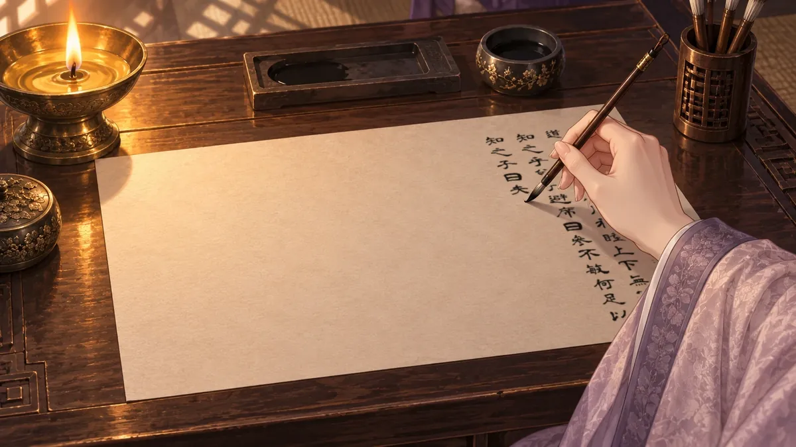
〈抄經〉的 CG：剛開始抄，筆停在第四行。紙上的字是程式用青柳隸書疊上去的。
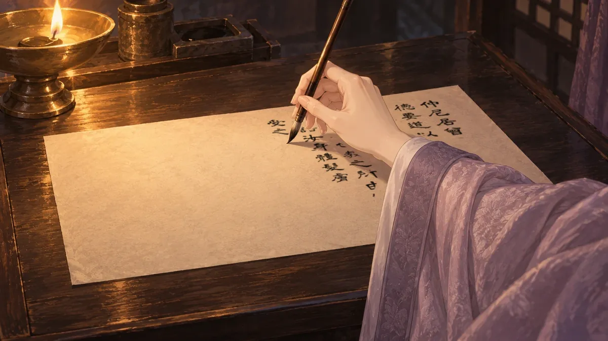
寫到「身體髮膚」：下一行要寫「受」，筆停在那一行的頂端。
- 後來去了哪裡
抄好的《孝經》送到卞夫人房裡，一直收在那裡（卷三〈燕歌行〉第 166 句），卷四曹植還拿它跟他的字比。不在曹丕的箱子裡。
腳本掃出的出處句（20 句）
- 第二卷〈抄經〉第 314 句卞夫人想給府裡留一部《孝經》，等叡兒大了，給他讀書識字用。
- 第二卷〈抄經〉第 316 句卞夫人：聽說妳的字好。替叡兒抄一部吧。
- 第二卷〈抄經〉第 317 句甄氏應了。回到房裡，袁尚對著紙坐了很久。
- 第二卷〈抄經〉第 319 句曹家從袁府抄出了一整箱文書。那裡面，說不定就有嫂嫂的家書。
- 第二卷〈抄經〉第 320 句字跡對不上，就露了。
- 第二卷〈抄經〉第 321 句嫂嫂寫的是隸書，字形扁扁方方，一筆一筆分開寫，捺畫收尾的燕尾挑得短短的。
- 第二卷〈抄經〉第 322 句他寫軍令用章草，筆畫簡省，一筆帶著一筆，燕尾挑得又長又急。現在每一捺寫到尾巴，他都把筆收住，寫成嫂嫂的字。
- 第二卷〈抄經〉第 323 句甄氏抄了七天。
- 第二卷〈抄經〉第 324 句寫到「身體髮膚，受之父母，不敢毀傷」，他想起父親。
- 第二卷〈抄經〉第 326 句他一分神，手就回到了從前的寫法。「受之父母」的「受」字，最後那一捺的燕尾挑了出去，又長又急。
- 第二卷〈抄經〉第 327 句抄好的《孝經》送到卞夫人房裡。
- 第二卷〈抄經〉第 329 句字是好字，扁扁方方，行列勻整。展開到「身體髮膚」那一段，曹丕停了下來。
- 第二卷〈抄經〉第 330 句曹丕的手指按在一個字上，按了很久。是哪一個字，他站的地方看不見。
- 第二卷〈抄經〉第 333 句曹丕：沒什麼。這部抄得好。
- 第二卷〈顯甫〉第 417 句曹丕：妳替我母親抄的經，每一捺都收得短短的，只有「受之父母」那個受字，挑的是同一下。
- 第三卷〈燕歌行〉第 166 句是那部《孝經》。去年甄夫人替叡兒抄的，一直收在卞夫人這裡。
- 第三卷〈燕歌行〉第 169 句袁尚的心跳重了起來。那一段有一個「受」字，燕尾挑得又長又急。
- 第三卷〈燕歌行〉第 171 句曹植：嫂嫂的字好看。
- 第四卷〈留守〉第 191 句曹植：嫂嫂的字，一筆一筆分得清清楚楚。比母親房裡那部《孝經》還端正。
- 第四卷〈留守〉第 193 句那部經裡，「受」字的燕尾挑了出去。曹植誇的，是那一捺挑不出來以後的字。
〈燕歌行〉208 正月入箱（家書之下）
- 卷・幕
- 卷三〈燕歌行〉（208 正月）。
- 寫了什麼
〈燕歌行〉全詩（曹丕作）。劇本逐字引了前六句與「賤妾煢煢守空房」；全詩、用字與版本比對見第三節。
- 誰寫的、什麼字
- 袁尚，曹丕要他用寫軍令的那手字。字體：章草（袁顯甫的手）。
他先照嫂嫂的字起頭，被曹丕叫停；改用章草，寫到第三行燕尾越收越短，他咬牙挑回去；寫到「賤妾」兩個字手抖。逐句見第三節的劇本場景表。
- 對劇情的意義
設定集：曹丕要他用寫軍令的章草謄〈燕歌行〉、回家書，一張一張收起來；收的是這手字背後的人。[7] 本作內部文件的心防表把它列為第 4 道：袁家少主的身分與字跡。[18]
- 對應的圖
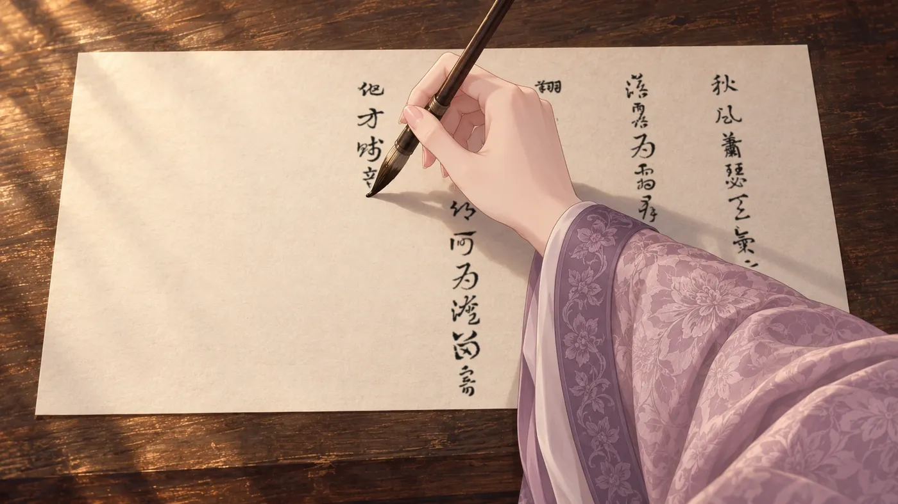
筆停在「妾」：只有「賤」與寫到一半的「妾」。完整的三步圖在第三節。
- 後來去了哪裡
曹丕折好收進袖子（卷三〈燕歌行〉第 148 句）；卷三〈家書〉結尾疊在二十幾封回信下面，一起收進箱子。卷五打開箱子，〈燕歌行〉在「底下一層」。
腳本掃出的出處句（28 句）
- 第三卷〈燕歌行〉第 125 句有一夜，曹丕在書房坐到半夜，寫了一首詩。
- 第三卷〈燕歌行〉第 126 句寫的是一個女人，丈夫出了遠門，她一個人守在家裡等。
- 第三卷〈燕歌行〉第 128 句案上攤著一張新紙，筆已經蘸好了墨。旁邊是曹丕的草稿。
- 第三卷〈燕歌行〉第 129 句曹丕：替我謄一遍。
- 第三卷〈燕歌行〉第 130 句他跪坐下來，拿起筆，先照嫂嫂的字起了一個頭。
- 第三卷〈燕歌行〉第 131 句曹丕：不是這個字。
- 第三卷〈燕歌行〉第 132 句曹丕：用你寫軍令的那手字。
- 第三卷〈燕歌行〉第 133 句他的筆停在紙上，墨在筆尖積成一滴。
- 第三卷〈燕歌行〉第 134 句那手字，曹丕讀過一整箱。
- 第三卷〈燕歌行〉第 135 句他把那一滴墨舔乾，重新下筆。
- 第三卷〈燕歌行〉第 138 句寫到第三行，章草一筆帶著一筆的地方，一筆一筆拆開了，捺畫的尾巴越收越短，往嫂嫂的隸書偏過去。他自己沒發現。
- 第三卷〈燕歌行〉第 140 句他咬住牙，把手腕壓下去，一筆帶著一筆寫得飛快，每一捺都把尾巴挑出去，挑得又長又急。
- 第三卷〈燕歌行〉第 142 句賤妾煢煢守空房。
- 第三卷〈燕歌行〉第 143 句寫到「賤妾」兩個字，他的手抖了一下。
- 第三卷〈燕歌行〉第 144 句他用寫過「進兵」「死守」「斬」的那隻手，寫下一個女人守著空房、盼丈夫回來。
- 第三卷〈燕歌行〉第 145 句寫完就好，寫完曹丕就會放他回去。可是他的手不肯快，每一筆都像在把自己的名字一個字一個字簽在這首詩底下。
- 第三卷〈燕歌行〉第 146 句最後一筆收完，曹丕拿起紙，對著窗外的天光看了很久。
- 第三卷〈燕歌行〉第 147 句曹丕：好字。
- 第三卷〈燕歌行〉第 148 句曹丕把那張紙折好，收進袖子裡。
- 第三卷〈燕歌行〉第 150 句曹丕：我走了以後，你就照這張紙上寫的等我。
- 第三卷〈燕歌行〉第 151 句破鄴那年，曹家從袁府抄走了一整箱軍令。這一張也是從袁家拿走的，只是這一次，是他親手寫了交出去。
- 第三卷〈燕歌行〉第 152 句他親手寫下「賤妾」兩個字，曹丕收著，不用拿給任何人看。
- 第三卷〈燕歌行〉第 153 句他起身，兩手收進袖子裡，退了一步。
- 第三卷〈燕歌行〉第 156 句後來有幾個夜裡，曹丕把那張紙拿出來，就著燈，在他耳邊念。
- 第三卷〈燕歌行〉第 157 句曹丕：賤妾煢煢守空房。
- 第三卷〈家書〉第 371 句曹丕：那首詩，卿還記得吧。
- 第三卷〈家書〉第 372 句賤妾煢煢守空房。
- 第三卷〈家書〉第 433 句那天夜裡，曹丕把二十幾封回信攤在書房的案上，跟那張〈燕歌行〉疊在一起，收進袁府抄來的那口箱子。
家書二十幾封208 秋至 210入箱（二十幾封）
- 卷・幕
- 卷三〈家書〉（208 秋至 210 春）。
- 寫了什麼
劇本逐字寫出的信：
- 第三卷〈家書〉第 386 句他寫了。妾在鄴，一切安好。叡兒已能背《詩》。夜長，常念君。
- 第三卷〈家書〉第 404 句他回了四個字。妾不記得。
- 第三卷〈家書〉第 412 句那天夜裡，他寫了手背上燈油燙起的水泡。
- 第三卷〈家書〉第 421 句下一封信，他在末尾添了一行：審氏看見了這手字。
- 第五卷〈洛神〉第 430 句有一封寫的是官渡。寫信的人說，那年十六歲，站在父親身後，看著烏巢的火把半邊天燒紅。
- 誰寫的、什麼字
- 袁尚，以甄氏的名義寄出，信裡是袁顯甫的字。字體：章草（袁顯甫的手），一封比一封短。
回信要寄進軍中，一路經過好幾個人的手（第 385 句），所以封上寫甄夫人，信裡寫袁顯甫的章草。字跡一路在變：回信上的字也在變。頭幾封，捺畫的尾巴還挑得出去；後來一封比一封短。曹丕在信裡一句都沒有提。
- 對劇情的意義
設定集：家書的燕尾一封比一封短。[7] 本作時間表：「夜長，念君」寫多了，分不清是應付還是寫得出口。[23]
- 對應的圖
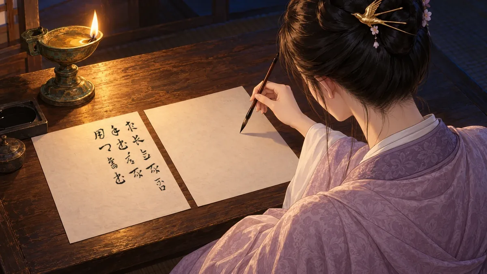
圖中紙上的字是曹丕寫來的信「夜長念我否，手書答我，用卿舊書」，疊字用章草（文言內容經作者 2026-10-08 認可）。他自己的回信沒有疊字的圖。
〈家書〉的 CG：案上一疊封好的信，沒有人。
- 後來去了哪裡
曹丕「收在身邊，一張都沒有丟」（第 424 句）；回到鄴城那夜，二十幾封回信疊在〈燕歌行〉上面收進箱子。其中一封寫官渡，叡兒在卷五讀到。
腳本掃出的出處句（47 句）
- 第三卷〈家書〉第 380 句秋天，第一封家書到了。
- 第三卷〈家書〉第 381 句給卞夫人的那封，說軍中一切都好。另有一封，指名給甄夫人。
- 第三卷〈家書〉第 382 句信裡只有幾行字。
- 第三卷〈家書〉第 383 句曹丕：夜裡想我嗎？親筆回信。用你的字。
- 第三卷〈家書〉第 384 句他坐在案前，鋪開紙，筆懸在紙上，墨乾了又蘸，一個字都沒有落下去。
- 第三卷〈家書〉第 385 句回信要寄進軍中，一路要經過好幾個人的手。封上寫的是甄夫人，信裡的字是袁顯甫的。
- 第三卷〈家書〉第 386 句他寫了。妾在鄴，一切安好。叡兒已能背《詩》。夜長，常念君。
- 第三卷〈家書〉第 387 句「常念君」三個字，他寫壞了三張紙才寫成。
- 第三卷〈家書〉第 388 句冬天，赤壁的消息傳回鄴城。曹軍在江上大敗，船燒了，退回北方。
- 第三卷〈家書〉第 392 句下一封信來了。曹丕沒事。
- 第三卷〈家書〉第 393 句他看完信，發現自己鬆了一口氣。
- 第三卷〈家書〉第 395 句信很短，字寫得又急又重，墨在紙上洇開一片。
- 第三卷〈家書〉第 398 句曹丕：把那一年寫下來。用你的字。寫你父親怎麼輸的。
- 第三卷〈家書〉第 400 句曹丕打輸了，就要他把袁家輸得更慘的那一次，一筆一筆寫出來。
- 第三卷〈家書〉第 401 句他寫了。寫到父親回到鄴城、一口血吐在案上那一段，他擱下筆，把手壓在膝上，壓到不抖了，才又提起來。
- 第三卷〈家書〉第 402 句信一封接一封。
- 第三卷〈家書〉第 403 句有一封只問了一句：你和阿芷一同侍奉我的那一夜，你記得什麼？
- 第三卷〈家書〉第 404 句他回了四個字。妾不記得。
- 第三卷〈家書〉第 405 句下一批家書到了。他那封回信，被退了回來。
- 第三卷〈家書〉第 406 句退信夾在給卞夫人的那一封裡，卞夫人先看見了。
- 第三卷〈家書〉第 407 句信重新封過。封上添了曹丕的兩個字：重寫。
- 第三卷〈家書〉第 408 句信裡是他的章草。卞夫人沒有拆，指頭就按在封口上。
- 第三卷〈家書〉第 409 句卞夫人：子桓把妳的信退回來了。夫妻隔著千里，還鬧什麼？
- 第三卷〈家書〉第 410 句卞夫人：好好回一封。他在軍中，就盼這個。
- 第三卷〈家書〉第 411 句卞夫人笑著把信遞給他。他當著她的面收進袖子裡，笑著應了。
- 第三卷〈家書〉第 412 句那天夜裡，他寫了手背上燈油燙起的水泡。
- 第三卷〈家書〉第 413 句寫了阿芷捧燈的兩隻手。
- 第三卷〈家書〉第 414 句封好，交給回軍中的人。這一封，路上又要經過好幾個人的手。
- 第三卷〈家書〉第 415 句每一封都要親筆回，每一封都要用袁顯甫的字。
- 第三卷〈家書〉第 416 句有一天他寫到一半，阿芷端著針線進來。他來不及收。
- 第三卷〈家書〉第 417 句阿芷的眼睛落在紙上，站住了。她的手指伸過去，停在一捺的尾巴上。
- 第三卷〈家書〉第 418 句阿芷：姐姐這手字……
- 第三卷〈家書〉第 420 句阿芷把手指縮了回去，沒有再問。
- 第三卷〈家書〉第 421 句下一封信，他在末尾添了一行：審氏看見了這手字。
- 第三卷〈家書〉第 422 句曹丕的回信只有一句：往後每一封，封口以前，先拿去給她看。
- 第三卷〈家書〉第 423 句從那以後，每一封回信封口以前，他都端到阿芷房裡。阿芷看完，替他把信封好。
- 第三卷〈家書〉第 424 句他寫的每一張紙，都寄進了曹營。曹丕收在身邊，一張都沒有丟。
- 第三卷〈家書〉第 425 句建安十四年，大軍從譙往東，去了合肥。信從更遠的地方寄回來。
- 第三卷〈家書〉第 426 句一年半，他回了二十幾封信。
- 第三卷〈家書〉第 427 句到後來，他提起筆，不用想就知道該寫什麼。夜長，念君。
- 第三卷〈家書〉第 428 句有一回寫完，他拿起來從頭讀，想挑出哪幾個字是應付曹丕的。
- 第三卷〈家書〉第 430 句回信上的字也在變。頭幾封，捺畫的尾巴還挑得出去；後來一封比一封短。曹丕在信裡一句都沒有提。
- 第三卷〈家書〉第 431 句建安十五年春，大軍回到鄴城。
- 第三卷〈家書〉第 433 句那天夜裡，曹丕把二十幾封回信攤在書房的案上，跟那張〈燕歌行〉疊在一起，收進袁府抄來的那口箱子。
- 第三卷〈家書〉第 434 句箱子底下壓著的，是他從前寫的軍令。
- 第五卷〈洛神〉第 429 句底下一層是〈燕歌行〉，和二十幾封從鄴城寄進軍中的家書。封上寫的也是母親，裡面的字卻是另一種：筆畫簡省，一筆帶著一筆，每一捺的尾巴都挑得又長又急。
- 第五卷〈洛神〉第 430 句有一封寫的是官渡。寫信的人說，那年十六歲，站在父親身後，看著烏巢的火把半邊天燒紅。
替曹丕抄的賦（四張，燒掉）212 春燒掉
- 卷・幕
- 卷四〈銅雀臺〉（212 春）。
- 寫了什麼
劇本沒有寫賦的字句，只寫「我那篇」（曹丕的賦）。四張紙的過程逐句見下方出處句。
- 誰寫的、什麼字
- 袁尚，曹丕指定「用你寫軍令的那手字」。字體：想寫章草，寫成隸書；被曹丕一張一張退回。
四張都挑不出燕尾：第一張「燕尾短短的」，第二張「寫出來還是短的」，第三張「字一個一個分開，扁扁方方，跟抄《孝經》的字一個樣子」，第四張「墨在紙上停成一個短短的點」。
- 對劇情的意義
曹丕看完說：剩下這一捺，我留到今夜。 我在卿身上改了四年。改完了。 設定集把 212 到 217 年標為〈字〉：燕尾挑不出來了，同一年曹丕不再叫他顯甫。[7]
- 對應的圖
- 〈銅雀臺〉燒紙那一句的 CG。
- 後來去了哪裡
第四卷〈銅雀臺〉第 26 句曹丕：這些，卿自己燒。 第四卷〈銅雀臺〉第 27 句他把紙一張一張湊到燈上。火從紙角燒上來，曹丕坐在一旁，看著紙燒完。
腳本掃出的出處句（22 句）
- 第四卷〈銅雀臺〉第 1 句建安十七年春，銅雀臺落成。曹操帶著兒子們登臺，要每人作一篇賦。
- 第四卷〈銅雀臺〉第 2 句曹植拿起筆，一口氣寫完，一個字都沒有改。曹操讀完，大笑，當場賞了他。
- 第四卷〈銅雀臺〉第 3 句曹丕的賦，曹操點了點頭，就放下了。
- 第四卷〈銅雀臺〉第 4 句那天夜裡，曹丕帶著一身酒氣進了甄夫人房裡，把一卷紙扔在案上。
- 第四卷〈銅雀臺〉第 6 句曹丕：子建的賦，父親叫人抄了十份。我那篇，一份都沒有。
- 第四卷〈銅雀臺〉第 7 句曹丕：顯甫，替我抄。用你寫軍令的那手字。
- 第四卷〈銅雀臺〉第 8 句他跪坐到案前，磨墨，提筆。
- 第四卷〈銅雀臺〉第 9 句第一張寫到第三個字，那一捺寫到尾巴，筆尖自己收住了，燕尾短短的。
- 第四卷〈銅雀臺〉第 10 句曹丕：重寫。
- 第四卷〈銅雀臺〉第 11 句第二張，他寫得很慢，每一捺都想著從前在河北的那一挑。寫出來還是短的。
- 第四卷〈銅雀臺〉第 12 句曹丕：重寫。
- 第四卷〈銅雀臺〉第 13 句第三張，他寫得很快，像從前夜裡趕軍令那樣。字一個一個分開，扁扁方方，跟抄《孝經》的字一個樣子。
- 第四卷〈銅雀臺〉第 14 句曹丕：重寫。
- 第四卷〈銅雀臺〉第 15 句第四張，他把手腕壓下去，想把那一捺用力挑出去。墨在紙上停成一個短短的點。
- 第四卷〈銅雀臺〉第 16 句曹丕拿起那張紙，就著燈看了很久。
- 第四卷〈銅雀臺〉第 21 句曹丕：剩下這一捺，我留到今夜。
- 第四卷〈銅雀臺〉第 22 句曹丕把四張紙疊好，推回他面前。
- 第四卷〈銅雀臺〉第 26 句曹丕：這些，卿自己燒。
- 第四卷〈銅雀臺〉第 27 句他把紙一張一張湊到燈上。火從紙角燒上來，曹丕坐在一旁，看著紙燒完。
- 第四卷〈銅雀臺〉第 28 句曹丕：子建的賦，一個字都不用改，父親就笑了。
- 第四卷〈銅雀臺〉第 29 句曹丕：我在卿身上改了四年。改完了。
- 第四卷〈銅雀臺〉第 31 句曹丕起身走了。他跪坐在案前，指頭上沾著紙灰。
曹植看他寫字214劇本沒寫去處
- 卷・幕
- 卷四〈留守〉（214）。
- 寫了什麼
劇本沒寫字句。疊字 CG 排的是曹植〈登臺賦〉首句「從明后而嬉遊兮」（隸書，青柳），右邊八行已寫好，筆停在左邊新的一行頂端。
- 誰寫的、什麼字
- 甄氏。字體：隸書（嫂嫂的手）。
第四卷〈留守〉第 191 句曹植：嫂嫂的字，一筆一筆分得清清楚楚。比母親房裡那部《孝經》還端正。 第四卷〈留守〉第 193 句那部經裡，「受」字的燕尾挑了出去。曹植誇的，是那一捺挑不出來以後的字。
- 對劇情的意義
設定集：〈字〉燕尾挑不出來了。[7] 劇本把這一點交給曹植的誇獎：他誇的，是那一捺挑不出來以後的字。
- 對應的圖
- 〈留守〉的 CG：甄夫人握筆的手停在紙上，曹植的手按著紙角。字是程式疊的。
- 後來去了哪裡
劇本沒有交代這張紙的去處。
腳本掃出的出處句（5 句）
- 第四卷〈留守〉第 190 句有一天，曹植看他寫字。
- 第四卷〈留守〉第 191 句曹植：嫂嫂的字，一筆一筆分得清清楚楚。比母親房裡那部《孝經》還端正。
- 第四卷〈留守〉第 192 句他的筆停住了。
- 第四卷〈留守〉第 193 句那部經裡，「受」字的燕尾挑了出去。曹植誇的，是那一捺挑不出來以後的字。
- 第四卷〈留守〉第 194 句甄氏：小郎過獎了。
寄給曹丕的「十」字217曹丕收到，之後沒交代
- 卷・幕
- 卷四〈病中〉（217），曹丕讀信在〈司馬門〉。
- 寫了什麼
一個「十」字，沒有別的字：
- 第四卷〈病中〉第 334 句他拆開。信上只有一句：子建去了幾次。
- 第四卷〈病中〉第 338 句曹植走了以後，他叫侍女拿筆來，寫了一個「十」字，封好，交給回軍中的人。
- 第四卷〈司馬門〉第 361 句曹丕：信上寫的是十次。
- 第四卷〈司馬門〉第 362 句甄氏：後來又來了一次，信已經寄出去了。
- 誰寫的、什麼字
- 甄氏，病中叫侍女拿筆來寫。字體：劇本沒寫字體。
劇本沒有寫這個字的字體，也沒有寫信裡別的字。
- 對劇情的意義
正典、設定集、心防表都沒有專門說明這一筆；這裡只列劇本句子，不加解讀。
- 後來去了哪裡
封好，交給回軍中的人；曹丕讀到了（「信上寫的是十次」）。之後劇本沒有交代。
腳本掃出的出處句（5 句）
- 第四卷〈病中〉第 333 句曹植：二哥寫給嫂嫂的？嫂嫂先看。
- 第四卷〈病中〉第 334 句他拆開。信上只有一句：子建去了幾次。
- 第四卷〈病中〉第 338 句曹植走了以後，他叫侍女拿筆來，寫了一個「十」字，封好，交給回軍中的人。
- 第四卷〈司馬門〉第 361 句曹丕：信上寫的是十次。
- 第四卷〈司馬門〉第 362 句甄氏：後來又來了一次，信已經寄出去了。
落款「妾甄氏」217曹丕收進袖子
- 卷・幕
- 卷四〈立太子〉（217）。
- 寫了什麼
「妾甄氏」三個字，寫在侍女筆錄的報告卷底下（那幾年他一夜一夜報告曹植的事，侍女記下來，卷四〈報告〉）。
- 第四卷〈立太子〉第 498 句曹丕：落款。
- 第四卷〈立太子〉第 499 句他寫了「妾甄氏」三個字。扁扁方方，捺畫收得短短的。
- 第四卷〈立太子〉第 501 句曹丕：子建跟卿的每一夜，都在這一卷裡，落著卿的款。
- 誰寫的、什麼字
- 甄氏，曹丕當面要他落款。字體：隸書（嫂嫂的手），捺畫收得短短的。
曹丕當面要他落款，劇本寫字形扁扁方方、捺畫收得短短的。
- 對劇情的意義
劇本裡曹丕之後拿它當把柄：第五卷〈留在鄴城〉第 149 句曹丕：報告那天，卿說天冷，侍女寫上了。立太子那天，卿在底下落了款。 曹丕也把這一卷與箱子分開講：第四卷〈立太子〉第 503 句曹丕：叡兒往後是要繼位的。這一卷，我收著。 第四卷〈立太子〉第 505 句曹丕：袁府那口箱子裡，收的是另一個人的字。
- 後來去了哪裡
曹丕把紙捲起來，收進袖子裡；說「這一卷，我收著」。劇本沒有說它進了箱子。
腳本掃出的出處句（7 句）
- 第四卷〈立太子〉第 495 句念到「天冷」兩個字，他停了一下。
- 第四卷〈立太子〉第 497 句念完了，侍女把筆遞到他手上。
- 第四卷〈立太子〉第 498 句曹丕：落款。
- 第四卷〈立太子〉第 499 句他寫了「妾甄氏」三個字。扁扁方方，捺畫收得短短的。
- 第四卷〈立太子〉第 500 句曹丕把紙捲起來，收進袖子裡。
- 第四卷〈立太子〉第 501 句曹丕：子建跟卿的每一夜，都在這一卷裡，落著卿的款。
- 第五卷〈留在鄴城〉第 149 句曹丕：報告那天，卿說天冷，侍女寫上了。立太子那天，卿在底下落了款。
握著女兒的手教寫字221 初入箱（夾在〈塘上行〉底下）
- 卷・幕
- 卷五〈母親〉（黃初二年春，221 初）。
- 寫了什麼
劇本沒寫字句。疊字 CG 排的是《急就篇》開頭「急就奇觚與眾異，羅列諸物名姓字，分別部居不雜廁」（漢代孩子的識字課本），隸書，字大而歪。《急就篇》是漢元帝時黃門令史游所作，[4]也就是章草取字用的皇象《急就章》那一篇文字。
- 誰寫的、什麼字
- 東鄉公主寫，他握著她的手帶。字體：隸書（嫂嫂的手）教出來的孩子的字。
東鄉公主寫，他握著她的手一筆一筆帶（第 184 句）。第五卷〈母親〉第 190 句曹丕拿起一張，看了很久。字形扁扁方方，每一捺都收得短短的。 第五卷〈母親〉第 191 句曹丕：寫得跟卿一模一樣。
- 對劇情的意義
正典與設定集沒有專門說明這張字；劇本的事實是：孩子寫的字和他現在的隸書一個樣子，曹丕看出來了。
- 對應的圖
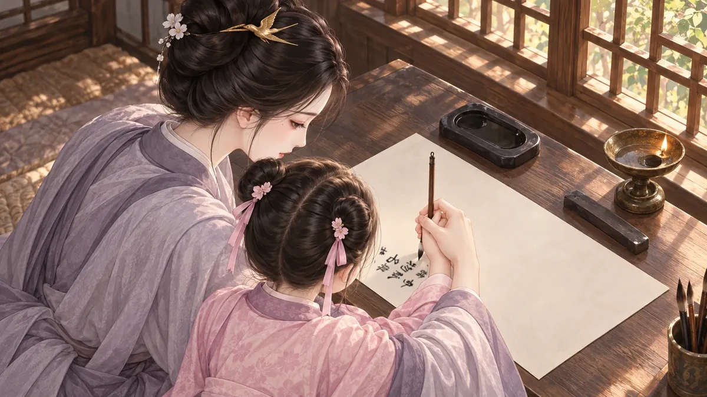
〈母親〉的 CG：大手握著小手寫《急就篇》。字是程式疊的，故意寫得大而歪。
- 後來去了哪裡
第五卷〈母親〉第 192 句曹丕把那張字折起來，收進袖子裡。 第五卷〈洛神〉第 432 句〈塘上行〉底下夾著一張折過好幾次的紙，是一個孩子寫的字，字形扁扁方方，每一捺都收得短短的。（箱子裡夾在〈塘上行〉底下，是正典「後日談」沒有列到的一張。）
腳本掃出的出處句（7 句）
- 第五卷〈母親〉第 184 句下午教她寫字。她握筆的手不穩，他握著她的手，一筆一筆地帶。
- 第五卷〈母親〉第 188 句女兒拉著曹丕的袖子，把自己寫的字一張一張攤給他看。
- 第五卷〈母親〉第 189 句東鄉公主：這是娘教的。
- 第五卷〈母親〉第 190 句曹丕拿起一張，看了很久。字形扁扁方方，每一捺都收得短短的。
- 第五卷〈母親〉第 191 句曹丕：寫得跟卿一模一樣。
- 第五卷〈母親〉第 192 句曹丕把那張字折起來，收進袖子裡。
- 第五卷〈洛神〉第 432 句〈塘上行〉底下夾著一張折過好幾次的紙，是一個孩子寫的字，字形扁扁方方，每一捺都收得短短的。
〈塘上行〉221入箱（最上面）
- 卷・幕
- 卷五〈有怨言〉（黃初二年，221）。
- 寫了什麼
〈塘上行〉全詩十二聯（見第四節）。劇本逐字寫出四聯：
- 第五卷〈有怨言〉第 320 句莫以豪賢故，棄捐素所愛。
- 第五卷〈有怨言〉第 322 句念君常苦悲，夜夜不能寐。
- 第五卷〈有怨言〉第 324 句邊地多悲風，樹木何修修。
- 第五卷〈有怨言〉第 326 句從君致獨樂，延年壽千秋。
- 誰寫的、什麼字
- 袁尚本人，求死那一夜。字體：想寫章草，寫出來是隸書（嫂嫂的手）；最後一聯照自己寫。
第五卷〈有怨言〉第 313 句他提起筆，想用袁顯甫的字寫。 第五卷〈有怨言〉第 315 句他寫了第一個字。筆畫一個一個分開，捺畫寫到尾巴，筆尖自己收住了。是嫂嫂的隸書。 第五卷〈有怨言〉第 317 句天亮的時候，案邊丟了一地揉皺的紙。 設定集：最後一聯他照自己寫。[7]
- 對劇情的意義
設定集：「全書的真跡，就是那首〈塘上行〉。」曹丕讀成甄夫人在怨他，下了旨；全天下唯一讀得出那一聯是誰的人，沒讀出來。逐聯對劇情的表在設定集〈讀者怎麼認出他〉。[7]
- 對應的圖
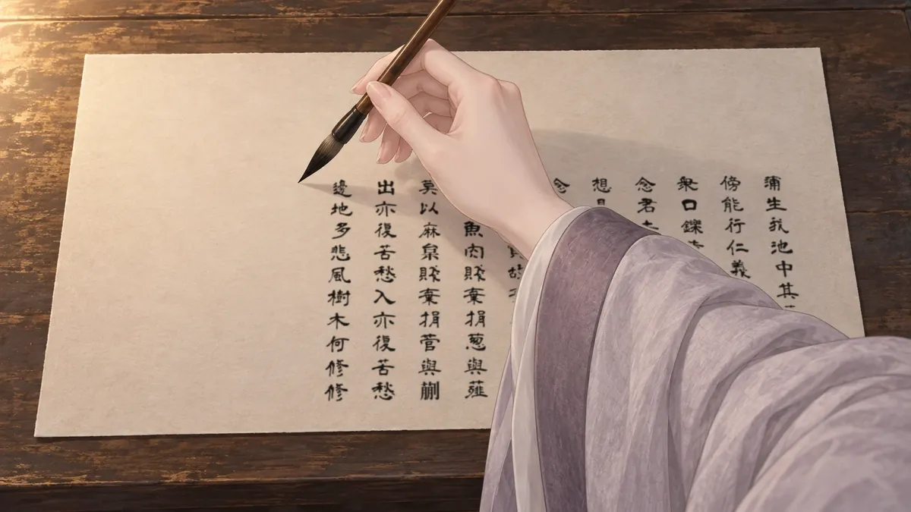
〈有怨言〉的 CG：前面的十一行寫好，筆停在最後一句的頂端。
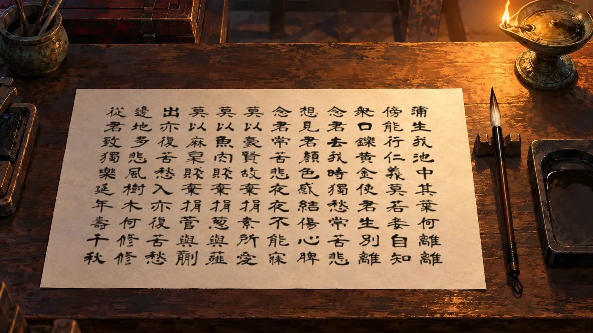
〈塘上行〉全詩（十二聯）寫完，筆擱在筆架上。三步做法見第八節。
- 後來去了哪裡
第五卷〈有怨言〉第 347 句曹丕認得，這是甄夫人的字。 第五卷〈有怨言〉第 349 句曹丕把詩卷捲好，收進書房那口舊箱子，擱在〈燕歌行〉上面。 第五卷〈洛神〉第 434 句他把〈塘上行〉交給樂府，譜成曲子，當作母親的詩，在宮裡唱。 第五卷〈洛神〉第 473 句後來的書上記著：〈塘上行〉，甄皇后作。
腳本掃出的出處句（24 句）
- 第五卷〈有怨言〉第 308 句他坐在案前，鋪開一張紙。
- 第五卷〈有怨言〉第 312 句他要死在曹丕手上。要曹丕提筆寫這道旨的時候，不得不想起鄴城還有他這個人。
- 第五卷〈有怨言〉第 313 句他提起筆，想用袁顯甫的字寫。
- 第五卷〈有怨言〉第 314 句章草，筆畫簡省，一筆帶著一筆，每一捺的尾巴往右上一挑，又長又急。認得這一挑的，天下只剩曹丕一個人。
- 第五卷〈有怨言〉第 315 句他寫了第一個字。筆畫一個一個分開，捺畫寫到尾巴，筆尖自己收住了。是嫂嫂的隸書。
- 第五卷〈有怨言〉第 316 句他把紙揉了，鋪一張新的。再寫，還是一樣。
- 第五卷〈有怨言〉第 317 句天亮的時候，案邊丟了一地揉皺的紙。
- 第五卷〈有怨言〉第 318 句他不再揉了。就用這手字，一行一行寫下去。
- 第五卷〈有怨言〉第 319 句字形扁扁方方，行列勻整，每一捺都收得短短的。
- 第五卷〈有怨言〉第 320 句莫以豪賢故，棄捐素所愛。
- 第五卷〈有怨言〉第 322 句念君常苦悲，夜夜不能寐。
- 第五卷〈有怨言〉第 324 句邊地多悲風，樹木何修修。
- 第五卷〈有怨言〉第 325 句寫到最後一句，筆停了一下。
- 第五卷〈有怨言〉第 326 句從君致獨樂，延年壽千秋。
- 第五卷〈有怨言〉第 328 句他看著這一句，沒有改。
- 第五卷〈有怨言〉第 330 句他叫那個侍女進來，把詩卷交到她手上。侍女捧著詩卷，紙抖得沙沙響。
- 第五卷〈有怨言〉第 346 句詩卷送到了曹丕的案上。
- 第五卷〈有怨言〉第 347 句曹丕認得，這是甄夫人的字。
- 第五卷〈有怨言〉第 348 句讀到邊地那一句，曹丕停了很久。
- 第五卷〈有怨言〉第 349 句曹丕把詩卷捲好，收進書房那口舊箱子，擱在〈燕歌行〉上面。
- 第五卷〈洛神〉第 428 句最上面一卷是〈塘上行〉。叡兒認得，是母親的字。
- 第五卷〈洛神〉第 434 句他把〈塘上行〉交給樂府，譜成曲子，當作母親的詩，在宮裡唱。
- 第五卷〈洛神〉第 472 句〈塘上行〉仍有人唱。一卷抄成另一卷，傳了下去。
- 第五卷〈洛神〉第 473 句後來的書上記著：〈塘上行〉，甄皇后作。
那口箱子證據
- 卷・幕
- 卷二〈顯甫〉、卷三〈家書〉、卷四〈郭女王〉〈立太子〉、卷五〈有怨言〉〈洛神〉。
- 裡面有什麼
- 箱底：箱子底下壓著的，是他從前寫的軍令。
- 底下一層：底下一層是〈燕歌行〉，和二十幾封從鄴城寄進軍中的家書。封上寫的也是母親，裡面的字卻是另一種：筆畫簡省，一筆帶著一筆，每一捺的尾巴都挑得又長又急。
- 夾在〈塘上行〉底下：〈塘上行〉底下夾著一張折過好幾次的紙，是一個孩子寫的字，字形扁扁方方，每一捺都收得短短的。
- 最上面：最上面一卷是〈塘上行〉。叡兒認得，是母親的字。
- 怎麼用
第四卷〈郭女王〉第 86 句曹丕：袁府那口箱子，擱在我書房。軍令是袁尚寫的，家書是你寫的，同一手字。 第四卷〈立太子〉第 506 句曹丕：那一箱是你的命，這一卷是叡兒的。
- 對應的圖
- 〈洛神〉的 CG：曹叡打開先帝遺物裡那口舊箱子。
- 後來去了哪裡
第五卷〈洛神〉第 471 句曹丕收著的那一箱紙，後來也朽了。
腳本掃出的出處句（14 句）
- 第二卷〈顯甫〉第 415 句曹丕：破鄴那年，父親從袁府抄出一箱軍令，我一封一封讀過。
- 第三卷〈燕歌行〉第 151 句破鄴那年，曹家從袁府抄走了一整箱軍令。這一張也是從袁家拿走的，只是這一次，是他親手寫了交出去。
- 第三卷〈家書〉第 433 句那天夜裡，曹丕把二十幾封回信攤在書房的案上，跟那張〈燕歌行〉疊在一起，收進袁府抄來的那口箱子。
- 第三卷〈家書〉第 434 句箱子底下壓著的，是他從前寫的軍令。
- 第四卷〈郭女王〉第 86 句曹丕：袁府那口箱子，擱在我書房。軍令是袁尚寫的，家書是你寫的，同一手字。
- 第四卷〈立太子〉第 503 句曹丕：叡兒往後是要繼位的。這一卷，我收著。
- 第四卷〈立太子〉第 505 句曹丕：袁府那口箱子裡，收的是另一個人的字。
- 第五卷〈有怨言〉第 349 句曹丕把詩卷捲好，收進書房那口舊箱子，擱在〈燕歌行〉上面。
- 第五卷〈洛神〉第 427 句先帝的遺物裡，有一口舊箱子，是當年從袁府抄來的。
- 第五卷〈洛神〉第 428 句最上面一卷是〈塘上行〉。叡兒認得，是母親的字。
- 第五卷〈洛神〉第 429 句底下一層是〈燕歌行〉，和二十幾封從鄴城寄進軍中的家書。封上寫的也是母親，裡面的字卻是另一種：筆畫簡省，一筆帶著一筆，每一捺的尾巴都挑得又長又急。
- 第五卷〈洛神〉第 432 句〈塘上行〉底下夾著一張折過好幾次的紙，是一個孩子寫的字，字形扁扁方方，每一捺都收得短短的。
- 第五卷〈洛神〉第 433 句叡兒翻來翻去，看不懂母親寫給先帝的信，為什麼有兩種字，信裡站在父親身後的，又是誰。
- 第五卷〈洛神〉第 471 句曹丕收著的那一箱紙，後來也朽了。
2.4 字眼出現，但沒有袁尚動筆的句子
其中 124 句由腳本掃出、沒有歸入上面的項目；每句附理由。後面的歸類只靠句子本身判斷，沒有別的依據。〈洛神賦〉是曹植寫的，不算袁尚的字，第五節說明。
「字」指表字、名字或說話的字句（29 句）
- 第一卷〈出征〉第 4 句袁尚，字顯甫。面如冠玉，十八歲便坐上河北之主的位子，從沒向誰低過頭。
- 第一卷〈出征〉第 20 句妻子審氏，小字阿芷，是審配的族人。兩人成親三年，還沒有孩子。
- 第二卷〈三年〉第 77 句二哥身邊那個「袁尚」，多半就是他。二哥讓他頂著這個名字，替主公把位子留著。
- 第二卷〈外家〉第 140 句張氏點點頭，沒有再問。袁熙的名字，母女兩個誰都沒有提。
- 第二卷〈冷落〉第 229 句挑的時候，他想起父親那幾個妾。她們叫什麼名字，他一個都不知道。
- 第二卷〈試探〉第 294 句曹丕問了半夜，沒有問出一個字。
- 第二卷〈首級〉第 373 句那張臉瘦得脫了形，嘴唇凍裂了。這個人從前在陣前替他舉旗，頂著他的名字逃了三年，最後死在遼東。
- 第二卷〈顯甫〉第 409 句曹丕：我讓人去袁府問過。袁顯甫的妻子姓審，小字阿芷。
- 第二卷〈顯甫〉第 433 句那是他的字。三年來，第一次有人叫他的名字。
- 第三卷〈頭三夜〉第 18 句出來的還是輕聲。下一個字到了嘴邊，又是「妾」。
- 第三卷〈頭三夜〉第 27 句同一句話，同一個聲調，一個字都沒有換。
- 第三卷〈頭三夜〉第 46 句帳子晃起來的時候，曹丕一直在他耳邊叫那個名字。每叫一次，他就被從嫂嫂的臉後面拖出來一次。
- 第三卷〈頭三夜〉第 112 句侍女聽見的，是甄夫人半夜扯著嗓子，叫公子的字。
- 第三卷〈劍〉第 333 句身體變了，聲音變了，名字沒了。他一直以為，劍還在。
- 第三卷〈孟津〉第 619 句他坐在那裡，嘴裡還留著那兩個字。
- 第四卷〈留守〉第 212 句他想答。心裡冒出來的第一個字，是「妾」。
- 第四卷〈司馬門〉第 413 句郭女王：下次說到子建的名字，看她的眼睛。
- 第四卷〈司馬門〉第 419 句可是聽到「子建」兩個字的那一下，他眼底閃了一下。很快，快得像沒有。
- 第四卷〈司馬門〉第 474 句這十三年，他丟過河北，丟過名字，丟過妻子。昨天早上，叡兒的床也抬走了。那些都是被人拿走的。這一件，是他自己開口的。
- 第五卷〈大疫〉第 60 句「我在」兩個字，他當著曹丕應過她兩回。
- 第五卷〈方士〉第 225 句他對著鏡子，想用原來的聲音，叫一聲自己的字。
- 第五卷〈方士〉第 271 句「非女」兩個字，郭女王不懂。那三個頭磕給了誰，郭女王也不懂。曹丕懂。
- 第五卷〈雨夜〉第 280 句曹丕：非女。她不懂這兩個字。
- 第五卷〈雨夜〉第 295 句九年。銅雀臺落成那一夜以後，這兩個字，曹丕就沒有叫過了。
- 第五卷〈被髮覆面〉第 367 句使者的聲音尖細，一個字一個字念得很平，念到「賜死」兩個字也沒有停頓。
- 第五卷〈被髮覆面〉第 371 句到了地下，見不了祖宗，也說不出一個字。
- 第五卷〈被髮覆面〉第 379 句聽到「被髮覆面」四個字，他想起了一件事。
- 第五卷〈被髮覆面〉第 386 句殺光她們家裡人的，是他。五家人，老的小的，他派兵一家一家去。他一個名字都沒有問。
- 第五卷〈洛神〉第 468 句東鄉公主那天以後去了哪裡，活到幾歲，史書裡一個字都沒有記。
字眼出現，句子裡沒有袁尚動筆（讀、聽、提到，或一般用法）（23 句）
- 第一卷〈出征〉第 17 句審配接過去，吹乾了墨。
- 第一卷〈出征〉第 18 句審配：主公這一手字，河北的將士沒有一個不認得。
- 第一卷〈鄴城〉第 58 句袁字旗一路跟在他身後，沒有倒。舉旗的，還是那個怕冷的親衛。
- 第一卷〈鄴城〉第 59 句城圍得更緊了。他叫那個親衛扛著袁字旗，趁夜出城，往北去幽州找二哥求援。
- 第一卷〈入府〉第 211 句他在車裡坐得筆直，一直到出了巷口，才讓自己閉上眼。
- 第二卷〈冷落〉第 234 句建安十一年秋，府裡的侍衛換了一批新人。
- 第二卷〈冷落〉第 277 句袁尚不信。他不知道曹丕坐了多久，也不知道自己睡著的時候，有沒有說了什麼。
- 第二卷〈抄經〉第 315 句卞夫人聽人說過，甄家的小女兒九歲就愛讀書寫字，常拿哥哥們的筆硯來用，家裡人笑她將來要當女博士。
- 第二卷〈抄經〉第 335 句戰報一封一封送回來：無終、盧龍塞、白檀、平岡。
- 第二卷〈顯甫〉第 414 句曹丕：還有妳的字。
- 第三卷〈頭三夜〉第 3 句曹丕說不告訴任何人。袁尚不信。
- 第三卷〈燕歌行〉第 162 句曹植：二哥這首寫得真好。像真有個女人在守空房，等她的丈夫從燕地回來。
- 第三卷〈孟津〉第 610 句甄夫人不信，還是哭。
- 第四卷〈郭女王〉第 60 句建安十八年，曹操受封魏公。這一年，曹丕的府裡多了一個女人，郭女王。
- 第四卷〈火盆〉第 131 句他沒有聽見換的是哪個字。
- 第四卷〈火盆〉第 141 句甄氏：平原侯請妾烤火，問了叡兒的書、夫人的腰，念了一首詩。天亮就送妾回來了。
- 第四卷〈火盆〉第 165 句曹丕：卿今夜留下，陪子建把這篇賦改完。
- 第四卷〈留守〉第 181 句建安十九年，平原侯曹植改封臨菑侯。那年秋天，曹操南征孫權，把曹植留下來守鄴城。
- 第四卷〈病中〉第 325 句東門那一角，寫著夜裡守門的人數：八。
- 第四卷〈司馬門〉第 483 句司馬門只有天子能走。曹操大怒，管門的公車令被處死。從那以後，曹操再也不信這個兒子。
- 第五卷〈被髮覆面〉第 383 句母親說，死了的人要是有知，她們會在地下再見到父親。所以母親剃了她們的頭髮，拿墨塗黑了她們的臉。
- 第五卷〈被髮覆面〉第 387 句嫂嫂天天到封住的祠門外上香。他一直不去想，嫂嫂是替誰上的。
- 第五卷〈洛神〉第 409 句黃初三年，曹植入京朝見。回封地的路上，渡過洛水。
答應寫信，劇本沒有寫出這封信（4 句）
- 第一卷〈出征〉第 24 句阿芷：到了平原，寫信回來。
- 第一卷〈出征〉第 25 句袁尚：寫。
- 第五卷〈大疫〉第 27 句阿芷：到了平原，寫信回來。
- 第五卷〈大疫〉第 28 句甄氏：寫。
「封」指封門、封條，不是封信（8 句）
- 第一卷〈出征〉第 32 句甄氏提著一盞燈，站在巷子另一頭那座舊祠的門外。祠門封著，她在門縫邊插了一炷香。
- 第一卷〈出征〉第 44 句往南門去的大街上，有五戶人家。五扇門都貼著封條，門前的石階長了草。
- 第一卷〈出征〉第 45 句封條是他派兵貼的。他騎馬經過，沒有轉頭。
- 第一卷〈洛神祠〉第 65 句袁紹死後，祠門就封了。封門以後，巷子裡開始有人說，泉底住著神女，掉下去的人不會浮上來。
- 第一卷〈洛神祠〉第 67 句她一身白衣，沒有往家裡跑。她扯下封門的木板，推開了封了兩年的祠門。
- 第五卷〈留在鄴城〉第 178 句郭女王在洛陽封了貴嬪。皇后的位子一直空著。
- 第五卷〈母親〉第 182 句女兒九歲了，封了東鄉公主。
- 第五卷〈被髮覆面〉第 385 句那五個女人，沉在洛神祠的泉底。祠門從那天起就封了。
嫂嫂或阿芷提到的別人的信與字（4 句）
- 第二卷〈抄經〉第 318 句他見過嫂嫂的字。二哥在幽州那兩年，嫂嫂每個月寫一封家書，託他的驛騎送去。信封上那幾個字，他看過很多次。
- 第五卷〈大疫〉第 39 句甄氏：三公子在平原寫給妹妹的信，封口以前，都要再讀一遍。
- 第五卷〈大疫〉第 42 句阿芷：是他寫給姐姐的信裡說的？
- 第五卷〈大疫〉第 44 句阿芷：那就好。他寫給姐姐，也提到我。
別人抄的〈燕歌行〉抄本（1 句）
- 第三卷〈燕歌行〉第 159 句卞夫人房裡，十六歲的曹植拿著一張抄本，把詩念了一遍。
別人寫來的信（卞夫人、曹丕）（7 句）
- 第三卷〈孟津〉第 608 句侍女來說，孟津又來了信，老夫人已經好多了。
- 第三卷〈孟津〉第 646 句八月，卞夫人親筆寫了一封信回來，說病已經好了。
- 第三卷〈孟津〉第 647 句他看著信上卞夫人的字，看了好幾遍，才信了。
- 第四卷〈病中〉第 320 句曹植：母親的信裡說，二哥的小女兒在車上吵著要娘，吵了兩天才睡。
- 第四卷〈病中〉第 332 句第十二天，曹植正在吹藥，侍女捧進來一封軍中寄來的信。是曹丕的。
- 第四卷〈病中〉第 335 句他把信折起來，壓在被子底下，接過曹植吹涼的藥，一口喝了。
- 第四卷〈病中〉第 339 句曹植看見那封信送進來。信寄出去以後，曹植只再來過一次。
曹植的詩與賦，或曹丕的《典論》（16 句）
- 第四卷〈銅雀臺〉第 59 句曹植回去以後，開始寫詩。
- 第四卷〈火盆〉第 126 句說到半夜，曹植從案上拿起一卷紙。
- 第四卷〈火盆〉第 127 句曹植：前幾天寫的。嫂嫂聽聽。
- 第四卷〈火盆〉第 128 句曹植念了一首詩，念得不快，念到一半停下來，改了一個字，又從頭念。
- 第四卷〈火盆〉第 129 句曹植：換了這個字，嫂嫂聽著好不好？
- 第四卷〈火盆〉第 153 句曹植把新寫的賦拿給他看，問他哪一句好。他說了，曹植回去就改。
- 第四卷〈火盆〉第 158 句曹丕在主位坐下，拿起案上那篇賦，翻了兩頁。
- 第四卷〈火盆〉第 169 句那一夜，那篇賦一個字都沒有改。
- 第四卷〈火盆〉第 173 句甄氏：一篇新寫的賦。
- 第四卷〈病中〉第 331 句曹植提筆改了數。捧圖的僕人一直立在門邊。
- 第四卷〈司馬門〉第 415 句曹丕：子建前幾天在父親面前又作了一篇賦。父親誇了他，說他像自己年輕的時候。
- 第四卷〈司馬門〉第 464 句曹植從案上拿起一卷紙，放到他面前。
- 第四卷〈司馬門〉第 465 句曹植：這幾年寫給嫂嫂聽的，都在這裡。嫂嫂帶回去。
- 第四卷〈司馬門〉第 466 句他伸手碰了碰詩卷。帶回去，明天就要攤在曹丕的案上，郭女王坐在旁邊一句一句地聽。
- 第四卷〈司馬門〉第 467 句他把詩卷推回曹植那邊。
- 第五卷〈餞行〉第 75 句那幾年，太子寫了一部《典論》。府裡的文士爭著抄，抄得最多的是講文章的那一篇。
曹丕或曹植寫的、曹丕下令的（7 句）
- 第四卷〈郭女王〉第 68 句有一夜，郭女王在曹丕房裡替他研墨。
- 第四卷〈郭女王〉第 75 句曹丕的筆停了。
- 第四卷〈留守〉第 185 句曹丕：不用寫信。她會記著，我回來聽。
- 第五卷〈大疫〉第 34 句甄氏：君的朋友，一個冬天走了四個。他在書房寫祭文，走不開。
- 第五卷〈餞行〉第 125 句曹操要曹植帶兵去救。臨出發前，曹植醉得站不起來，接不了軍令。
- 第五卷〈餞行〉第 126 句曹操大怒，收回了軍令。從那以後，曹植再也沒有帶過兵。
- 第五卷〈被髮覆面〉第 368 句他跪著聽，心裡只想知道一件事：曹丕寫這道旨的時候，有沒有猶豫過一下。
侍女筆錄他說的話（7 句）
- 第四卷〈報告〉第 222 句曹丕叫他去報告。郭女王也在，身後跪著一個侍女，鋪著紙，拿著筆。
- 第四卷〈報告〉第 224 句他一夜一夜地說。侍女的筆在紙上沙沙地走。
- 第四卷〈報告〉第 230 句他把左手收進袖子裡。侍女的筆停了一下，把這一句也記下了。
- 第四卷〈報告〉第 239 句侍女：雨大，門關著。奴婢只聽見臨菑侯說了一句話，聽不清字。
- 第四卷〈報告〉第 242 句曹丕：寫上。
- 第四卷〈報告〉第 243 句侍女把「天冷」兩個字寫上去。墨落在紙上，他看得見。
- 第四卷〈報告〉第 244 句曹丕看著侍女寫下的那幾行，臉色變了。
郭女王那邊的紙卷（8 句）
- 第四卷〈司馬門〉第 363 句郭女王坐在旁邊，手邊擱著一卷紙。他說一句，郭女王的指甲就在紙上往下劃一行。
- 第四卷〈司馬門〉第 382 句郭女王把紙捲起來，收進自己的袖子裡。那一行，沒有劃掉。
- 第四卷〈司馬門〉第 384 句曹丕坐在主位。郭女王坐在下首，袖口露出紙卷的一角。
- 第四卷〈司馬門〉第 395 句郭女王的指甲在紙上掐了一道。
- 第四卷〈司馬門〉第 409 句劉夫人走後，郭女王把紙攤在曹丕面前。
- 第四卷〈司馬門〉第 411 句曹丕看完，把紙推回去，什麼都沒有說。
- 第四卷〈司馬門〉第 475 句他沒有回自己房裡，直接去了曹丕那裡。郭女王也在，侍女也在，紙已經鋪好了。
- 第四卷〈立太子〉第 491 句宴開之前，曹丕來了。身後跟著郭女王房裡那個侍女，捧著一卷紙。
口頭報告，不是寫字（3 句）
- 第四卷〈司馬門〉第 431 句曹丕：東門的兵，袁尚數給你聽的。十三年，一點都沒變。東門那一行，加上那天下午掐的兩道，她一筆都沒有劃掉。
- 第四卷〈司馬門〉第 446 句曹丕：說完回來，一個字一個字報給我聽。
- 第四卷〈司馬門〉第 486 句他想起自己排了一下午的那六個字。
抄家的「抄」，不是抄寫（1 句）
- 第五卷〈餞行〉第 78 句袁府抄來的那口箱子，還擺在太子的書房裡。
墳前的木牌，不是他寫的（3 句）
- 第五卷〈方士〉第 229 句墳在城北的荒坡上，草長得很高。墳前插著一塊木牌，字被雨打得快看不清了：袁尚，字顯甫。
- 第五卷〈方士〉第 236 句跪著的是甄夫人。木牌上寫的是袁顯甫。墳裡埋的，是替他舉旗那個人的頭。
- 第五卷〈方士〉第 249 句方士：荒坡上那塊木牌，寫的是袁尚。夫人磕了三個頭。
沒有寫出來的信（1 句）
- 第五卷〈有怨言〉第 311 句可是自己死了，洛陽只會收到一封信：甄夫人病故。
〈洛神賦〉是曹植寫的（2 句）
- 第五卷〈洛神〉第 414 句曹植回去，寫了一篇賦。
- 第五卷〈洛神〉第 417 句曹植到死都不知道，他寫的那個人從前叫袁顯甫。
三、〈燕歌行〉
結論先講：劇中用的是魏文帝〈燕歌行〉二首的第一首，從「秋風蕭瑟天氣涼」到「爾獨何辜限河梁」十五句，含「賤妾煢煢守空房」。第二首「別日何易會日難」劇本沒有用到。劇中第一份「定本」是袁尚用章草謄的，曹丕收著。[24][25]
3.1 全詩、字面白話、劇中出現在哪裡
用字照《文選》李善註本，把「鴈」「佗」兩個異體字改成通行的「雁」「他」，其餘逐字相同（比對結果見 3.2）。白話只解釋字面，用典以李善註為準。[24]
| 句 | 原文 | 字面 | 劇本引了哪裡 | 疊字成品上有沒有 |
|---|
| 1 | 秋風蕭瑟天氣涼， | 秋風冷清地吹，天氣轉涼。 | 第三卷〈燕歌行〉第 136 句 | 有 |
| 2 | 草木搖落露為霜。 | 草木凋零，露水凝成了霜。 | 第三卷〈燕歌行〉第 136 句 | 有 |
| 3 | 群燕辭歸雁南翔， | 成群的燕子辭別北方歸去，大雁往南飛。 | 第三卷〈燕歌行〉第 137 句 | 有 |
| 4 | 念君客遊思斷腸。 | 想到夫君在外作客，思念得肝腸寸斷。 | 第三卷〈燕歌行〉第 137 句 | 有 |
| 5 | 慊慊思歸戀故鄉， | 夫君心裡悵然不足，想著回家，眷戀故鄉。 | 第三卷〈燕歌行〉第 141 句 | 有 |
| 6 | 何為淹留寄他方？ | 為什麼還久留，寄身在別的地方？ | 第三卷〈燕歌行〉第 141 句 | 有 |
| 7 | 賤妾煢煢守空房， | 我孤單一人，守著空房。 | 第三卷〈燕歌行〉第 142 句
第三卷〈燕歌行〉第 157 句（曹丕）
第三卷〈家書〉第 372 句 | 「賤」「妾（半）」 |
| 8 | 憂來思君不敢忘。 | 憂愁湧上來，想著你，不敢忘記。 | 劇本沒有引 | 沒有 |
| 9 | 不覺淚下霑衣裳， | 不知不覺淚水流下，沾濕了衣裳。 | 劇本沒有引 | 沒有 |
| 10 | 援琴鳴絃發清商。 | 取過琴來撥動琴弦，奏出清商的曲調。 | 劇本沒有引 | 沒有 |
| 11 | 短歌微吟不能長， | 短歌輕輕地吟，唱不長久。 | 劇本沒有引 | 沒有 |
| 12 | 明月皎皎照我床。 | 明月皎潔，照在我的床上。 | 劇本沒有引 | 沒有 |
| 13 | 星漢西流夜未央， | 銀河向西流轉，夜還沒有過完。 | 劇本沒有引 | 沒有 |
| 14 | 牽牛織女遙相望。 | 牽牛星與織女星，遠遠地互相望著。 | 劇本沒有引 | 沒有 |
| 15 | 爾獨何辜限河梁？ | 你們兩顆星有什麼過錯，偏偏被銀河隔開？ | 劇本沒有引 | 沒有 |
劇本引的是前六句與第七句「賤妾煢煢守空房」，第八句以後沒有引。疊字成品（章草）只排了前 42 個字加「賤」與寫到一半的「妾」，共 44 個字位。
3.2 用哪個版本，與維基文庫逐字比對
| 版本 | 與本作相同的字 | 差異（用腳本逐字比對，異體字另外標出） |
|---|
《文選》卷二十七（李善註本）[24]
維基文庫「昭明文選/卷27」修訂版 2082937 | 105 / 105 | 異體字 2 處：「雁」「鴈」、「他」「佗」。 |
《宋書》卷二十一〈樂志〉晉樂所奏[26]
維基文庫「宋書/卷21」修訂版 1649218 | 99 / 105 | 異體字 3 處：「群」「羣」、「他」「它」、「絃」「弦」。
異文 7 處：第 3 句「雁」→「鵠」（異文）；第 4 句「遊」→「游多」（異文）；第 4 句「斷」→「（無）」（他版沒有）；第 6 句「（無）」→「君」（他版多出）；第 6 句「為」→「（無）」（他版沒有）；第 10 句「琴」→「瑟」（異文）；第 14 句「牛」→「年」（異文）。 |
《樂府詩集》卷三十二（四庫全書本）[27]
維基文庫「樂府詩集 (四庫全書本)/卷032」修訂版 786938 | 97 / 105 | 異體字 8 處：「涼」「凉」、「搖」「揺」、「群」「羣」、「留」「畱」、「煢」「焭」、「煢」「焭」、「床」「牀」、「遙」「遥」。
異文 9 處：第 3 句「燕」→「䴏」（異文）；第 3 句「雁」→「鵠」（異文）；第 4 句「君」→「吾」（異文）；第 4 句「遊」→「逰多」（異文）；第 4 句「斷」→「（無）」（他版沒有）；第 6 句「（無）」→「君」（他版多出）；第 6 句「為」→「（無）」（他版沒有）；第 10 句「琴」→「瑟」（異文）；第 10 句「絃」→ 四庫本此處缺字（維基文庫以□標示）。 |
《玉臺新詠》卷九（四庫全書本）[25]
維基文庫「玉臺新詠 (四庫全書本)/卷09」修訂版 788990 | 101 / 105 | 異體字 6 處：「群」「羣」、「燕」「鷰」、「雁」「鴈」、「煢」「㷀」、「煢」「㷀」、「床」「牀」。
異文 4 處：第 6 句「何」→「君」（異文）；第 6 句「留」→ 四庫本此處缺字（維基文庫以□標示）；第 8 句「敢」→「可」（異文）；第 10 句「絃」→ 四庫本此處缺字（維基文庫以□標示）。 |
維基文庫〈燕歌行 (曹丕)〉其一（取自《魏文帝集》《玉臺新詠》）[28]
維基文庫「燕歌行 (曹丕)」修訂版 837571 | 103 / 105 | 異體字 2 處：「霑」「沾」、「絃」「弦」。
異文 3 處：第 3 句「雁」→「鵠」（異文）；第 6 句「（無）」→「君」（他版多出）；第 6 句「為」→「（無）」（他版沒有）。 |
逐字比對的版本文字存在 zhenji/calligraphy_refs.json（2026-10-13 從維基文庫取得，記了修訂版號）；比對時去掉標點。「相同的字」把異體字算相同。
歸納：《文選》與《玉臺新詠》的第三句是「雁南翔」，《宋書》《樂府詩集》是「鵠南翔」；本站史料考證已經記了這個差別，本作採《文選》版，上下句用同一個系統。[12] 《宋書．樂志》與《樂府詩集》還有幾處不同：「念君客游多思腸」（樂府詩集作「念吾客遊多思腸」）、「君何淹留寄它方」、「援瑟鳴弦」，都不是本作的版本。《樂府詩集》本頁上的「羣䴏」是四庫本字形，疑為「羣燕」的異體，我們沒有查到字書。維基文庫的《宋書》頁寫「牽年織女」，疑為誤字。[26][27]
3.3 魏文帝〈燕歌行〉二首
《玉臺新詠》卷九的標題是「魏文帝樂府燕歌行二首」，《樂府詩集》與《宋書》也把兩首並列；《文選》卷二十七只收第一首。[25][27][26][24]劇中用的是第一首。第二首（《宋書》所收晉樂所奏本，六解）全文如下，劇本沒有用到：[26]
別日何易會日難，山川悠遠路漫漫。
鬱陶思君未敢言，寄書浮雲往不還。
涕零雨面毀形顏，誰能懷憂獨不歎。
耿耿伏枕不能眠，披衣出戶步東西。
展詩清歌聊自寬，樂往哀來摧心肝。
悲風清厲秋氣寒，羅帷徐動經秦軒。
仰戴星月觀雲間，飛鳥晨鳴，聲氣可憐，留連顧懷不自存。
3.4 史實：作者、年代、文學史位置、版本
| 項目 | 說法與出處 |
|---|
| 作者 | 《文選》卷二十七題「魏文帝」；《宋書．樂志》標「文帝詞」；《樂府詩集》卷三十二與《玉臺新詠》卷九都題魏文帝，《玉臺新詠》題為「魏文帝樂府燕歌行二首」。我們查到的傳本都題曹丕，查不到另題他人的說法。[24][26][27][25] |
| 題目的意思 | 李善註引《七言歌錄》：「燕，地名，猶楚宛之類。」[24] 《樂府詩集》引《廣題》：「燕，地名也，言良人從役於燕而為此曲」；引《樂府解題》：「言時序遷換，行役不歸，婦人怨曠無可訴也」。[27] |
| 寫作年代 | 史書沒有繫年。維基百科〈曹丕〉條說「據考寫於建安十二年曹操北征三郡烏桓期間」（原文簡體，轉成正體），沒有標考證者，我們查不到這個說法的原始論證。[29] 本作沒有把它寫成赤壁戰敗後所作，劇中是 208 年正月謄寫（本作時間表）。[12][23] |
| 文學史位置 | 維基百科〈七言古詩〉：「魏曹丕的《燕歌行》是現存的第一首文人創作的完整七言詩。」[30] 維基文庫〈燕歌行 (曹丕)〉的按語（署名「亦夫」，查不到更原始的出處）說，張衡《四愁詩》首句還用「兮」字，仍不脫楚調，曹丕這首句句用韻，是完整的七言之作；並引明代胡應麟《詩藪》：「子桓《燕歌》二首，開千古妙境。」[28] 「最早」要加上定義才成立：現存、文人創作、整首七言。 |
| 版本流傳 | 收在梁蕭統編、唐李善註的《文選》；沈約《宋書．樂志》作為晉樂所奏的曲子收錄；陳徐陵《玉臺新詠》；宋郭茂倩《樂府詩集》卷三十二。各本用字的差別見 3.2。[24][26][25][27] |
3.5 劇中的角色：謄寫、燕尾、半個「妾」字
這一幕在卷三〈燕歌行〉（208 年正月）。劇本頁與地圖頁已經有這一卷的全文與地名，這裡只列跟「字」有關的句子。心防表把它列為曹丕拆袁尚的第四道：袁家少主的身分與字跡。[18] 設定集的說法：[7]曹丕要他用寫軍令的章草謄〈燕歌行〉、回家書，一張一張收起來，收的是這手字背後的人。
| 場景 | 劇本句子（逐字） |
|---|
| 曹丕要他謄 | 第三卷〈燕歌行〉第 129 句曹丕：替我謄一遍。 |
| 先照嫂嫂的字起頭 | 第三卷〈燕歌行〉第 130 句他跪坐下來，拿起筆，先照嫂嫂的字起了一個頭。 |
| 被叫停，改用章草 | 第三卷〈燕歌行〉第 132 句曹丕：用你寫軍令的那手字。 |
| 燕尾越寫越短 | 第三卷〈燕歌行〉第 138 句寫到第三行，章草一筆帶著一筆的地方，一筆一筆拆開了，捺畫的尾巴越收越短，往嫂嫂的隸書偏過去。他自己沒發現。 |
| 咬牙挑回去 | 第三卷〈燕歌行〉第 140 句他咬住牙，把手腕壓下去，一筆帶著一筆寫得飛快，每一捺都把尾巴挑出去，挑得又長又急。 |
| 寫到「賤妾」，手抖 | 第三卷〈燕歌行〉第 143 句寫到「賤妾」兩個字，他的手抖了一下。 |
| 每一筆像在簽名 | 第三卷〈燕歌行〉第 145 句寫完就好，寫完曹丕就會放他回去。可是他的手不肯快，每一筆都像在把自己的名字一個字一個字簽在這首詩底下。 |
| 曹丕收走 | 第三卷〈燕歌行〉第 148 句曹丕把那張紙折好，收進袖子裡。 |
| 在他耳邊念 | 第三卷〈燕歌行〉第 156 句後來有幾個夜裡，曹丕把那張紙拿出來，就著燈，在他耳邊念。 |
| 傳遍鄴城，曹植讀抄本 | 第三卷〈燕歌行〉第 159 句卞夫人房裡，十六歲的曹植拿著一張抄本，把詩念了一遍。 |
| 收進箱子 | 第三卷〈家書〉第 433 句那天夜裡，曹丕把二十幾封回信攤在書房的案上，跟那張〈燕歌行〉疊在一起，收進袁府抄來的那口箱子。 |
「半個妾字」：CG 規格寫明「賤妾煢煢守空房」這一行用程式疊上去，最後一個「妾」字只寫一半。對應劇本「寫到「賤妾」兩個字，他的手抖了一下」。疊字成品上只有「賤」和只寫了「立」與「女」第一筆的「妾」，章草字庫的「半字」就是為這一處做的。
3.6 字：章草一個字一個字從拓本取
全詩 105 個字位，取字庫現有 55 個字位有字可用（整字 43、拼字 10、代字 1、半字 1），其餘 50 個字位沒有取：疊字成品只排了前 44 個字位，後面沒有用到的字不必取。下表照詩的行列排，每行 7 字，一格一個字位。
整字拼字代字半字沒有取
秋風蕭瑟天氣涼草木搖落露為霜群燕辭歸雁南翔念君客遊思斷腸慊慊思歸戀故鄉何為淹留寄他方賤妾煢煢守空房憂來思君不敢忘不覺淚下霑衣裳援琴鳴絃發清商短歌微吟不能長明月皎皎照我床星漢西流夜未央牽牛織女遙相望爾獨何辜限河梁
「妾」在字庫裡有整字，劇中那一處用半字。「雁」是代字（松江本與趙孟頫本「鴻鵠」下的「鴈」都缺，取「鷹」截去鳥部）。每個字的來源頁在第七節的 55 字字表。
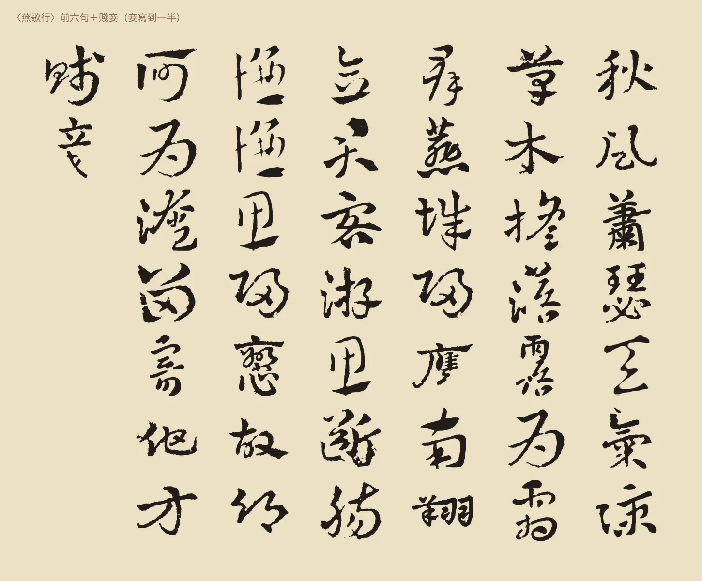
排版樣張：前六句加「賤」與寫到一半的「妾」，每個字都是從拓本切下來的單字。取字與排版是本機工具做的，字源是公有領域拓本。
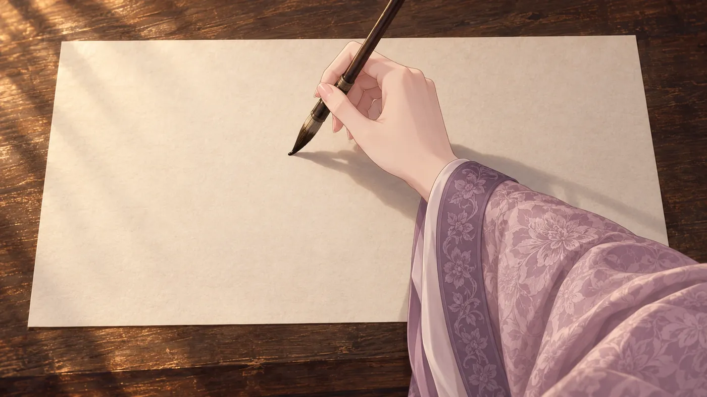
第一步：沒有字的底圖（AI 生成的場景，紙上留白）。
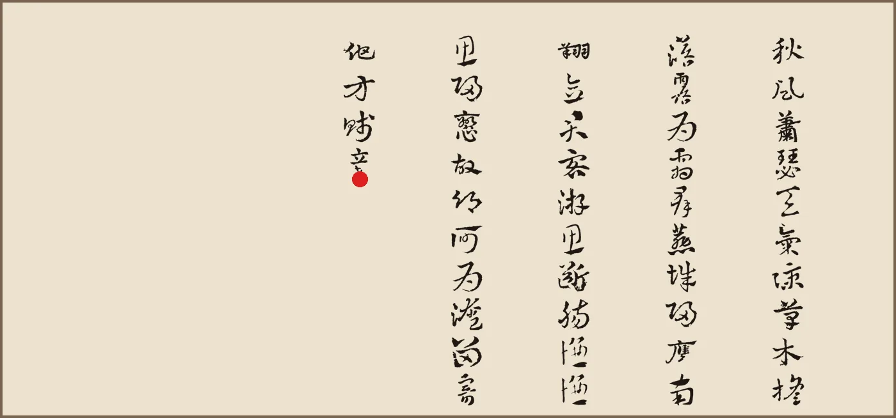
第二步：正面的平紙，字已排好；紅點是筆尖的位置，最後一個字（「妾」）收在筆尖。
第三步：照紙的四角透視貼回，墨色乘進紙紋。這是劇本卷三〈燕歌行〉用的 CG。
四、〈塘上行〉
結論先講：本作採甄后說。故事裡詩是袁尚作的，紙上是嫂嫂的隸書，書上記成甄后作；十二聯二十四句，劇中全詩出現在疊字 CG，文字只逐字寫出四聯。逐聯對劇情的表（每一聯劇情對得到什麼、曹丕讀成什麼）在設定集〈讀者怎麼認出他〉，這裡不重複。[7]
4.1 全詩、字面白話、劇中出現在哪裡
用字照《樂府詩集》卷三十五所收本辭，字改成通行寫法（脩→修、衆→眾、黄→黃）。[31] 白話只照字面寫；「魚肉」「蔥薤」「麻枲」「菅蒯」這幾句裡「賤」字的語意，我們不下判斷。
| 聯 | 原文 | 字面 | 劇本逐字引了哪裡 |
|---|
| 1 | 蒲生我池中，其葉何離離。 | 蒲草長在我的池塘裡，葉子多麼繁盛地垂著。 | 劇本沒有逐字引 |
| 2 | 傍能行仁義，莫若妾自知。 | 旁人行不行仁義，不如我自己最清楚。 | 劇本沒有逐字引 |
| 3 | 眾口鑠黃金，使君生別離。 | 眾人的口能熔化黃金，使你我生出別離。 | 劇本沒有逐字引 |
| 4 | 念君去我時，獨愁常苦悲。 | 想著你離開我的時候，我獨自憂愁，常常苦悶悲傷。 | 劇本沒有逐字引 |
| 5 | 想見君顏色，感結傷心脾。 | 想見你的容顏，心中鬱結，傷到心脾。 | 劇本沒有逐字引 |
| 6 | 念君常苦悲，夜夜不能寐。 | 想著你，常常苦悲，夜夜睡不著。 | 第五卷〈有怨言〉第 322 句 |
| 7 | 莫以豪賢故，棄捐素所愛。 | 不要因為（有了）豪傑賢人，就拋棄一向所愛的人。 | 第五卷〈有怨言〉第 320 句 |
| 8 | 莫以魚肉賤，棄捐蔥與薤。 | 不要因為魚肉的緣故，就把蔥和薤丟開。 | 劇本沒有逐字引 |
| 9 | 莫以麻枲賤，棄捐菅與蒯。 | 不要因為麻枲的緣故，就把菅和蒯丟開。 | 劇本沒有逐字引 |
| 10 | 出亦復苦愁，入亦復苦愁。 | 出去也愁苦，進來也愁苦。 | 劇本沒有逐字引 |
| 11 | 邊地多悲風，樹木何修修。 | 邊地多的是悲風，樹木在風裡修修作響。 | 第五卷〈有怨言〉第 324 句
第五卷〈洛神〉第 474 句 |
| 12 | 從君致獨樂，延年壽千秋。 | 隨你去獨自快樂吧，祝你年壽延長千秋。 | 第五卷〈有怨言〉第 326 句 |
劇本逐字引了第 6、7、11、12 聯（第五卷〈有怨言〉、第五卷〈洛神〉）。其餘各聯只出現在疊字的 CG 上。
4.2 作者三說
本站史料考證已把證據擺全，這裡只複述出處：《文選》卷二十八陸機〈塘上行〉李善註引《五言歌錄》：「塘上行，古辭。或云甄皇后造，或云魏文帝，或云武帝。」[32] 《樂府詩集》卷三十五引《鄴都故事》，說甄后「為郭皇后所譖，文帝賜死後宮，臨終為詩」；引《樂府解題》：「前志云晉樂奏魏武帝〈蒲生〉篇，而諸集錄皆言其詞文帝甄后所作」。[31] 《玉臺新詠》卷二收入，題「甄皇后」。[33][34] 所以書上掛過三個名字：甄后、曹丕、曹操，沒有一個是袁顯甫。[12]
4.3 版本與逐字比對
| 版本 | 與本作相同的字 | 差異 |
|---|
《樂府詩集》卷三十五（四庫全書本）〈塘上行〉本辭[31]
維基文庫「樂府詩集 (四庫全書本)/卷035」修訂版 786944 | 119 / 120 | 異體字 6 處：「眾」「衆」、「黃」「黄」、「邊」「邉」、「修」「脩」、「修」「脩」、「壽」「夀」。
異文 1 處：第 9 句「麻」→ 四庫本此處缺字（維基文庫以□標示）。 |
《玉臺新詠》卷二（四庫全書本）〈塘上行〉[33]
維基文庫「玉臺新詠 (四庫全書本)/卷02」修訂版 788980 | 119 / 120 | 異體字 5 處：「眾」「衆」、「黃」「黄」、「別」「别」、「顏」「顔」、「壽」「夀」。
異文 1 處：第 12 句「君」→「軍」（異文）。 |
維基文庫〈塘上行 (甄皇后)〉（取自《玉臺新詠》，校對度 75%）[34]
維基文庫「塘上行 (甄皇后)」修訂版 1542904 | 116 / 120 | 異體字 3 處：「眾」「衆」、「修」「脩」、「修」「脩」。
異文 7 處：第 2 句「仁」→「人」（異文）；第 6 句「（無）」→「愁」（他版多出）；第 6 句「能」→「（無）」（他版沒有）；第 7 句「（無）」→「賢」（他版多出）；第 7 句「賢」→「（無）」（他版沒有）；第 8 句「（無）」→「賤」（他版多出）；第 8 句「賤」→「（無）」（他版沒有）。 |
晉樂所奏本題魏武帝，分五解，有重複的句子與增句（「倍恩者苦栝」「念與君一共離別」等），結尾是「邊地多悲風，樹木何蕭蕭。今日樂相樂，延年壽千秋」，跟本辭差得很多，不逐字列。[31] 《鄴都故事》引的臨終詩也不同：「蒲生我池中，綠葉何離離。豈無蒹葭艾，與君生別離。莫以賢豪故，棄捐素所愛」。[31] 本作的「眾口鑠黃金」與結尾「樹木何修修。從君致獨樂，延年壽千秋」照本辭。
4.4 劇中的角色，與有疊字的畫面
卷五〈有怨言〉：他坐在案前想用章草寫，寫出來是嫂嫂的隸書，揉了一地的紙，最後「就用這手字，一行一行寫下去」；曹丕認得這是甄夫人的字，把詩卷收進箱子，擱在〈燕歌行〉上面。逐句的出處句在第二節的〈塘上行〉那一張卡。下列 CG 的紙上疊了〈塘上行〉的字（字是青柳隸書，程式疊的）：
| CG | 劇本位置 | 紙上的字 |
|---|
v5_yy_poem | 第五卷〈有怨言〉第 319 句起 | 全詩寫完，筆擱在筆架上（十二聯一聯一行） |
v5_yy_last | 第五卷〈有怨言〉第 325 句起 | 筆停在最後一句的頂端，前面的行已寫好 |
v5_yy_d03 | 第五卷〈有怨言〉第 348 句起 | 曹丕讀〈塘上行〉，字朝著他 |
v5_ls_d01 | 第五卷〈洛神〉第 434 句起 | 樂府的曲譜詩卷（遠景，紙小，只讀得出直行的字） |
v5_ls_d13 | 第五卷〈洛神〉第 472 句起 | 結尾抄好的〈塘上行〉，紙斜放，右邊被筆架壓著 |
v5_ls_d14 | 第五卷〈洛神〉第 473 句起 | 結尾的書頁：題名「塘上行」、作者「甄皇后作」，接著全詩 |
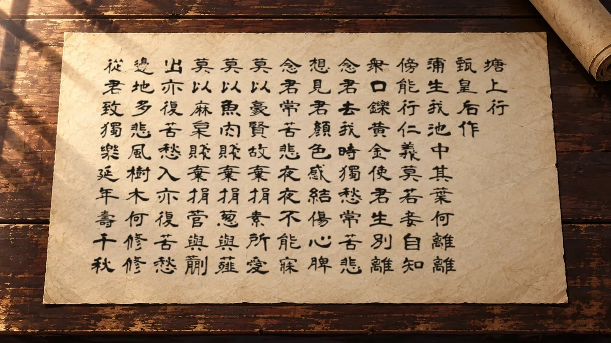
劇本最後的書頁（v5_ls_d14）：題名「塘上行」、作者「甄皇后作」，接著全詩。字是青柳隸書，程式疊的。
4.5 字：青柳隸書，缺字怎麼補
隸書的疊字用「青柳隷書しも」。青柳缺字，整個疊字計畫用到的缺字有八個：「眾」「黃」「鄉」「蔥」「德」「娛」六個換成字型有的異體（衆、黄、郷、葱、徳、娯；衆、郷也比較接近漢隸），「枲」「蒯」兩個字型沒有，用青柳自己的偏旁拼：枲拼自「台」「木」，蒯拼自草字頭、「朋」、立刀旁。[7] 〈塘上行〉用到其中的眾、黃、蔥、枲、蒯五個。下圖是青柳的樣張（孝經、〈燕歌行〉、〈塘上行〉用隸書排的測試），紅框是仍缺的字；再下一張是「枲」「蒯」的拼法。
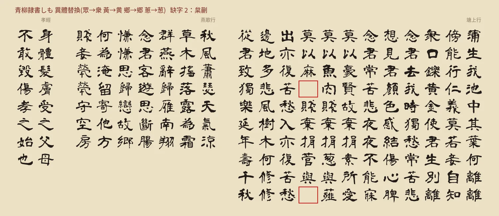
青柳隷書しも排的孝經、〈燕歌行〉、〈塘上行〉樣張，已把眾黃鄉蔥換成異體；紅框是仍缺的「枲」「蒯」。字型授權見第六節。
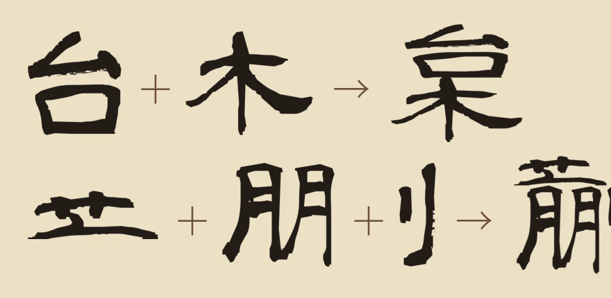
枲＝台＋木，蒯＝草字頭＋朋＋立刀旁；偏旁都取自青柳隸書本身。
4.6 兩首詩，兩手字，三首詩一部書
對照表照設定集〈三首詩、一部書〉那一節寫，設定集是準的：[7]
| 詩 | 誰作（設定集） | 紙上是誰的手 | 字體 | 箱子裡的位置 |
|---|
| 〈燕歌行〉 | 史書記為曹丕作 | 袁尚（袁顯甫），曹丕要他謄 | 章草 | 底下一層（家書同層） |
| 〈塘上行〉 | 他作的詩，書上記成甄后作 | 袁尚寫，出來的是嫂嫂的隸書 | 隸書 | 最上面 |
| 〈洛神賦〉 | 曹植作（222） | 沒經過他的手，不在箱子裡 | 無 | 無 |
設定集原話：「〈燕歌行〉：史書記為曹丕作。劇中第一份「定本」是他用章草謄的。」「〈塘上行〉：他作的詩，紙上是嫂嫂的隸書，書上記成甄后作。」「〈洛神賦〉：曹植作（222），沒經過他的手，寫的是金簪和那張臉。」
五、〈洛神賦〉
結論先講：〈洛神賦〉是曹植寫的，不算袁尚寫的字，所以不在「袁尚寫過的全部」裡。劇本只用了一聯：「恨人神之道殊兮，怨盛年之莫當。」這一頁只放劇中用到的句子，全篇請看《文選》卷十九。[35]
| 項目 | 內容 |
|---|
| 序（劇本只用了年份） | 「黃初三年，余朝京師，還濟洛川。古人有言，斯水之神，名曰宓妃。感宋玉對楚王神女之事，遂作斯賦。」[35] 劇本：第五卷〈洛神〉第 409 句黃初三年，曹植入京朝見。回封地的路上，渡過洛水。 |
| 劇本逐字引的一聯 | 第五卷〈洛神〉第 415 句恨人神之道殊兮，怨盛年之莫當。 （《文選》原文位置：「於是越北沚，過南岡。紆素領，迴清陽。動朱脣以徐言，陳交接之大綱。恨人神之道殊兮，怨盛年之莫當。抗羅袂以掩涕兮，淚流襟之浪浪。」）[35] |
| 劇本緊接著的白話 | 第五卷〈洛神〉第 416 句恨的是人和神走不到一條路上，怨的是最好的年紀，偏偏不能在一起。 |
| 劇本怎麼定位它 | 第五卷〈洛神〉第 417 句曹植到死都不知道，他寫的那個人從前叫袁顯甫。 |
| 字 | 沒有疊字。劇本只寫曹植回去寫了一篇賦（第五卷〈洛神〉第 414 句起，CG 上的紙沒有疊字）。設定集：〈洛神賦〉沒經過他的手，寫的是金簪和那張臉。[7] |
版本：《文選》卷十九李善註本；維基文庫該頁「文選考異」提到，李善註裡「記曰」開頭那段感甄故事，袁本、茶陵本沒有，依考異不是善註。劇本沒有用那段，這裡不採。[35]
六、字帖、出土文書與字型：出處、真跡還在不在、授權
結論先講：參考材料有六樣字帖與出土文書、一套採用的字型，另外試過四套字型。這些裡面沒有一件是曹丕、袁尚、甄氏或皇象的真跡。出土的吳簡與李柏文書是當時人的原件，但書手是官府書吏；字帖都是後世刻石的拓本、墨跡本或近代複製本。每一項下面寫出處、現存的是什麼、離漢末多遠、授權依據、我們拿來做什麼。授權查不到原文的，不放圖，只寫文字。
6.1 長沙走馬樓三國吳簡
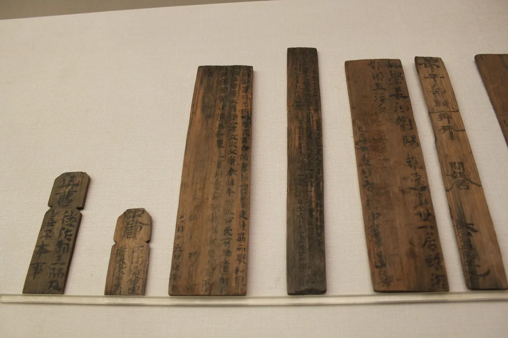
長沙走馬樓吳簡木牘照片（Commons 標題 Wu Kingdom Wood Tablets，攝影者 Gary Todd，2010-08-20，標示地點為長沙湖南省博物館）。授權 CC0。[36]
| 項目 | 內容 |
|---|
| 這是什麼 | 1996 年 6 至 12 月，長沙市中心五一廣場旁修平和堂商場時，在走馬街 J22 古井發現的三國吳簡牘，14 萬餘枚，內容是臨湘縣與臨湘侯國的官府文書：田家莂、戶籍、賦稅簿、司法文書、名刺與信札。書寫年代大部分在東漢建安到吳嘉禾年間（196 至 237）。[13] 現藏長沙簡牘博物館。[37] |
| 真跡還在不在 | 在。這是出土的原件，是當時孫吳官府書吏的手跡；它不是曹丕、袁尚、甄氏的字。 |
| 書體 | 張永強《美術報》2019：「吳簡中行書和楷書中隸書的痕跡仍較普遍，用筆不夠精到，法度不夠謹嚴」；「當時行書、楷書筆法已普遍運用，筆畫省略，筆勢連屬」。（這兩句是把原文的簡體轉成正體。）[38] |
| 離漢末多遠 | 年代與建安重疊。地點是長沙，是孫吳官府，用途是簿冊文書，書手是吏，跟河北軍中的章草軍令不同。 |
| 授權（圖） | 照片是 Commons 上 CC0 的檔案。[36] 我們用像素比對確認：本機 cast/ 資料夾那張參考圖，就是這張照片縮小後的版本（灰階平均差 2.2，同一張）。 |
| 我們拿來做什麼 | 放在 cast/ 資料夾當參考圖。製作紀錄查不到更具體的用途與當初的出處；這次是補查出處與授權，才放上公開站。 |
6.2 李柏文書
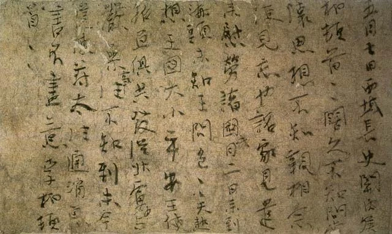
李柏文書（Commons 標 Public domain，PD-art；上傳者 Jason22，2007-10-20，來源標為大紀元網頁）。[39]
| 項目 | 內容 |
|---|
| 這是什麼 | 前涼西域長史李柏的書信與奏表草稿等紙本墨跡，大谷探險隊橘瑞超 1909 年取得。[40] 現藏龍谷大學大宮圖書館：兩件幾乎完整的文書（西域文化資料 538A、B）與 39 件殘片（大谷 8001 至 8039）。[19] |
| 年代 | 荒川正晴 2014：經孟凡人、余太山、伊藤敏雄等人的檢討，大致定在 325 年（或 323 年）到 327 年（或 328 年）之間。[19] 維基百科寫東晉咸和三年（328）。[40] |
| 出土遺址 | 說法不一：維基百科寫海頭古城；荒川正晴說 LK 遺址說已大致被推翻，多數意見是 LA 遺址（西域長史府遺址）。[40][19] 我們不在這裡選邊。 |
| 真跡還在不在 | 在。出土原件，紙本。但寫的人不一定是李柏本人：荒川正晴說，原先以為李柏自己寫，後來的研究提出疑義，是誰代寫成了問題。[19] 它是官府文書，不是曹丕、袁尚、甄氏的字。 |
| 書體 | 維基百科：行書十二行，第一稿筆畫較粗、隸書意味明顯，第二稿已有行草筆意。[40] |
| 離漢末多遠 | 約晚一百零五年（以 325 年算）；地點在西域，用途是公文草稿。 |
| 授權（圖） | Commons 檔案頁標 Public domain（PD-art）：四世紀的文書，平面翻拍，沒有新的著作權。[39] 要請作者留意：上傳者標的來源是大紀元的網頁，不是龍谷大學或博物館的原檔，解析度也只有 640 × 383。 |
| 我們拿來做什麼 | 放在 cast/ 資料夾當參考圖，用途同吳簡，查不到更多紀錄。 |
6.3 皇象《急就章》松江本
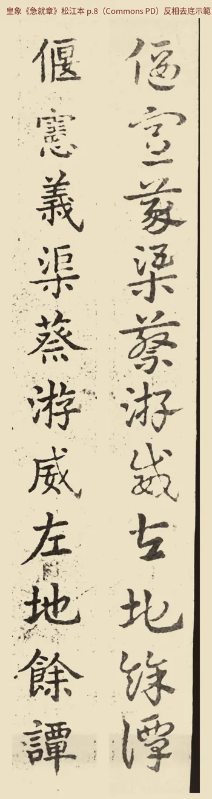
松江本第 8 頁，反相去底後的示範（取字工具的概念驗證）。原圖是 Commons 上公有領域的拓本掃描。
| 項目 | 內容 |
|---|
| 這是什麼 | 相傳為三國吳皇象所書的《急就章》（章草；《急就篇》本是漢元帝時黃門令史游所作的識字課本）。明正統四年（1439），楊政據北宋葉夢得刻本重刻，碑石今在松江博物館。[20][4] |
| 真跡還在不在 | 皇象的手寫原本不存。上海博物館的說法是「相傳為皇象書寫」；現存的是明代刻石的拓本，刻自宋代刻本。我們查不到皇象手寫本存世的記載。再往前的來歷（葉夢得刻本之前）只在網路百科看到說法，沒有一手資料，這頁不寫。[20] |
| 離漢末多遠 | 皇象是三國吳人，拓本是 1439 年的，字形經過刻工的手；晚約 1219 年。 |
| 授權（圖） | Commons 檔案「皇象急就章.pdf」標 PD-Art 與 PD-old-70，日期 1439，來源 ltfc.net。[41] |
| 我們拿來做什麼 | 章草取字的主要來源：整字 27 個，另有 10 個拼字用了它的部件，代字與半字各 1 個也取自它。（腳本統計） |
6.4 索靖《月儀帖》，收在《鬱岡齋墨妙》卷七
| 項目 | 內容 |
|---|
| 這是什麼 | 傳為西晉索靖所書的章草帖。今只見刻本。[17] 本作用的是《鬱岡齋墨妙》卷七（故宮贈帖000021）：「萬曆三十九年歲次辛亥夏五。金壇王氏摹勒上石」，紙本拓本，國立故宮博物院藏。[42] |
| 真跡還在不在 | 索靖的手寫原本不存（維基百科：今僅見刻本）；現存的是 1611 年的摹刻拓本。 |
| 離漢末多遠 | 索靖（239 至 303）是西晉人；刻本晚約 1391 年。 |
| 授權（圖） | Commons 檔案標 Public domain，影像取自國立故宮博物院 Open Data。[42] |
| 我們拿來做什麼 | 整字 11 個，另有 3 個拼字用了它的部件。 |
6.5 《晋人章草帖：出師頌・月儀章》
| 項目 | 內容 |
|---|
| 這是什麼 | 日本國立國會圖書館藏，1939 年（昭和十四年）東京清雅堂的複製本，十一丁，索書號 308-29，目錄標「索靖筆」，2010-03-31 數位化。[21] |
| 真跡還在不在 | 目錄題為索靖筆，現存的是近代複製本。這件《出師頌》原跡的真偽與歸屬，我們沒有查。 |
| 授權（圖） | Commons 檔案標 PD-scan、PD-Japan。[21] |
| 我們拿來做什麼 | 整字 2 個（「夜」「天」）。 |
6.6 趙孟頫書《急就章》冊
| 項目 | 內容 |
|---|
| 這是什麼 | 國立故宮博物院藏，紙本墨跡，創作時間登錄為元成宗大德七年（1303），編號故書000157，法書草書一冊，十二開二十四幅，後副葉二開四幅，有周密、鮮于樞等題跋。[2] |
| 真跡還在不在 | 在，是趙孟頫自己寫的墨跡（故宮登錄為趙孟頫書）。它是趙孟頫的真跡，不是皇象的字。 |
| 離漢末多遠 | 晚約 1083 年。 |
| 授權（圖） | Commons 檔案標 Public domain，故宮 Open Data 影像。[2] |
| 我們拿來做什麼 | 只補松江本缺頁的字：整字 3 個（「蕭」「燕」「客」）。 |
6.7 青柳隷書しも（字型）
| 項目 | 內容 |
|---|
| 這是什麼 | SIMO 製作的免費毛筆隸書字型，字形取自書家青柳衡山寫的字（Impress Watch 的介紹原文：「書家の青柳衡山氏が書いた文字をもとにした隷書体の毛筆フォント」）。2009-05-30 公開 V1.00，2013-06-09 升到 V2.00（第二水準版）；本機用的檔案是 2.01 版。[22] |
| 真跡還在不在 | 不適用。這是數位字型，字形來自現代書家，沒有漢末原件。 |
| 授權原文 | 隨附的〈フォントの使用方法〉：青柳隷書しもフォントは無料フォントです。使用にあたっての条件は何もありません。商用使用もＯＫです。無料でどこにでも配布することができます。ただし、再配布にあたって有料とすることはできません。配布する際には、フォントの使用方法と解説を一緒に配布すること。（意思：免費字型，使用沒有任何條件，商用也可以；可以免費散布，不能收費；散布時要附上使用方法與解說。）[22] |
| 授權（圖） | 使用沒有條件，用字型排出來的樣張圖可以公開。本站只放排出來的圖，沒有散布字型檔。 |
| 我們拿來做什麼 | 隸書疊字（孝經、〈塘上行〉、《急就篇》等）。缺字的處理見 4.5。 |
青柳隷書しも樣張（同 4.5）。
6.8 試過的另外四套隸書字型：不放樣張，只寫授權
製作時試過五套隸書字型，做了比較圖（cg_v/font_samples/contact_sheet.png）。設定集的說法照寫：「我試過五套隸書字型，最後選青柳。我不是書法家，看不出細節，只看得出這套比較有感覺；我沒有留下逐項比較的理由，所以這裡不替它編一套說法。」[7] 比較圖上標了測試字的缺字數：教育部隸書 3.0 缺 5 字，青柳隷書しも 2.01 缺 6 字（換異體字後缺 2 字），王漢宗中隸書繁 1.3 缺 0 字，臨海隸書 1.0 缺 51 字，阿里媽媽刀隸體 1.0 缺 45 字。缺字數只是比較圖上的事實，選擇的理由沒有記錄。
另外四套字型的授權，我們只查到下面這些。官方原文沒有查到的，這頁不放它們的樣張：
| 字型 | 授權說法 | 依據 | 樣張 |
|---|
| 教育部隸書 3.0 | 教育部語文成果網的楷書、宋體字形檔說明，連到創用 CC 姓名標示－禁止改作 3.0 台灣版，引用須標示「中華民國教育部」。隸書的官方授權頁，我們沒有查到原文。 | [43][44] | 不放：隸書的官方原文沒查到 |
| 王漢宗中隸書繁 1.3 | 王漢宗自由字型的專案頁說明以 GNU GPL v2 釋出；專案頁讀不到授權全文，也查不到「中隸書繁 1.3」是否在名單內。 | [45] | 不放：授權全文與名單沒查到 |
| 臨海隸書 1.0 | 第三方字體網站轉述作者聲明：企業、個人均可免費商用，禁止修改字體或做衍生版本；官方來源是一篇微信公眾號文章，我們沒讀到。 | [46] | 不放：只有第三方轉述 |
| 阿里媽媽刀隸體 1.0 | 我們查不到官方的授權原文。 | — | 不放：授權查不到 |
七、章草怎麼一個字一個字取
袁顯甫的章草沒有字型可用。做法是從公有領域的章草拓本裡，一個字一個字切下來，排成需要的句子。目前切好 55 個字：整字 43 個、拼字 10 個、代字 1 個、半字 1 個。整字的來源：松江本 27、月儀帖 11、趙孟頫 3、出師頌 2。數字是腳本從 manifest.json 統計的，build 時會檢查總數。
限制要說清楚：皇象是三國吳人，索靖是西晉人，趙孟頫是元代人，拓本是明代刻的，都晚於建安；本作用它們代替袁顯甫的軍中章草，這是取字的限制，不是考證結論。[7]
7.1 取字的步驟
- 從 Wikimedia Commons 下載公有領域的拓本掃描 PDF（松江本、月儀帖、出師頌、趙孟頫書），取出每頁的內嵌掃描圖。
- 用 segment.py 產每一頁的切字標號圖，找出要取的字在頁面上的位置（像素座標 bbox），寫進 manifest.json，同時記下第幾欄第幾字。
- 切出 bbox：拓本是黑底白字，先把白字轉成墨量；趙孟頫是黑字白紙的墨跡，先反相。再去掉石花、斑點與鄰行侵入的筆畫（只留夠大的連通塊）。
- 縮放到統一的字身、置中，再用形態學把筆畫寬度統一，輸出透明底的墨色 PNG。
- 拼字：拓本裡找不到整字時，每個部件從別的字切一塊，縮放後放進字身的目標位置（manifest 的 parts 與 place）。半字：只留指定範圍的墨（manifest 的 keep）。
以上步驟來自取字工具 zhangcao.py 的說明與程式，工具與 manifest 都在 zhenji/glyphs_zhangcao/。
7.2 七個代表字：原拓本裁切範圍、取出的單字
「房」整字
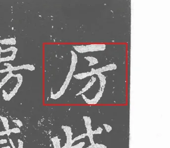
松江本 第 7 頁，紅框是裁切範圍取出的單字整字：松江本直接切下的字。 manifest 的說明：松江本 p7 第1行第1字（「蘭偉房」）
「燕」整字
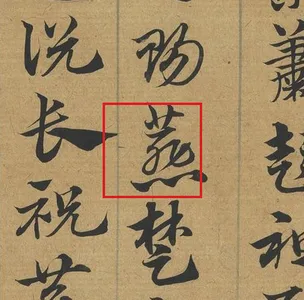
趙孟頫 第 4 頁，紅框是裁切範圍取出的單字整字：松江本這一段缺頁，改取趙孟頫書《急就章》冊（元代墨跡，黑字白紙，切字前先反相）。 manifest 的說明：趙孟頫書急就章 第4頁右半第4行第3字（「賜燕楚莊」）；松江本此段缺頁
「賤」拼字
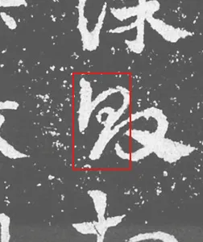
松江本 第 35 頁，紅框是裁切範圍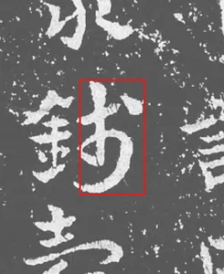
松江本 第 33 頁，紅框是裁切範圍取出的單字拼字：拓本裡找不到「賤」，貝取自「敗」的左半，戔取自「錢」的右半。 manifest 的說明：拼字：貝＝松江本 p35「盜賊…謀敗」章草行的「敗」左半；戔＝松江本 p33 第5行第7字「錢」右半
「煢」拼字
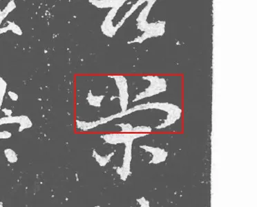
松江本 第 43 頁，紅框是裁切範圍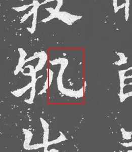
松江本 第 43 頁，紅框是裁切範圍取出的單字拼字：上取自「榮」的上半，下取自「孰」的右半（丸，代卂）。 manifest 的說明：拼字：上＝松江本 p43 第1行第8字「榮」上半；下＝同頁第3行第3字「孰」右半（丸，代卂）
「守」拼字
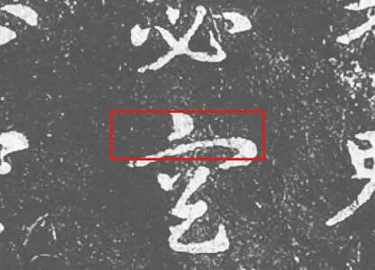
松江本 第 16 頁，紅框是裁切範圍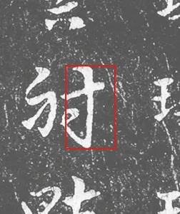
松江本 第 16 頁，紅框是裁切範圍取出的單字拼字：宀取自「空」的上部，寸取自「射」的右半。 manifest 的說明：拼字：宀＝松江本 p16 第5行第5字「空」上部；寸＝同頁第3行第4字「射」右半
「雁」代字
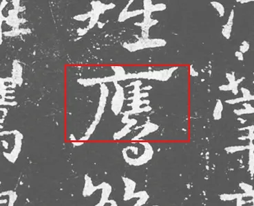
松江本 第 22 頁，紅框是裁切範圍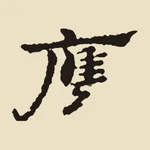
取出的單字代字：松江本與趙孟頫本「鴻鵠」下的「鴈」都缺，取松江本「鷹」，截去下方鳥部。 manifest 的說明：代字：松江本 p22 第4行第7字「鷹」截去下方鳥部（松江本與趙孟頫本「鴻鵠」下的「鴈」都缺）
「妾（寫到一半）」半字
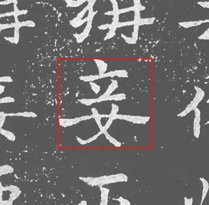
松江本 第 9 頁，紅框是裁切範圍取出的單字半字：只留「立」與「女」的第一筆，用在〈燕歌行〉「賤妾」那一處，劇情裡他寫到一半手抖。 manifest 的說明：同上，只留「立」與「女」的第一筆（右下斜那一筆）
7.3 55 字字表
每格是一個取好的單字，下面是類型與來源頁（松江本、月儀帖、趙孟頫、出師頌 的第幾頁；拼字有兩個部件，列兩頁）。
賤拼字
松江本 p35、松江本 p33
妾整字
松江本 p9
妾（寫到一半）半字
松江本 p9
煢拼字
松江本 p43、松江本 p43
守拼字
松江本 p16、松江本 p16
空整字
松江本 p16
房整字
松江本 p7
夜整字
出師頌 p2
長整字
松江本 p43
念整字
松江本 p40
我整字
月儀帖 p2
否拼字
松江本 p43、松江本 p17
手整字
松江本 p17
書整字
松江本 p30
用整字
松江本 p1
舊整字
月儀帖 p4
秋整字
松江本 p2
蕭整字
趙孟頫 p4
瑟整字
松江本 p16
氣整字
松江本 p24
涼整字
月儀帖 p5
草整字
松江本 p26
木整字
松江本 p37
搖拼字
松江本 p35、松江本 p22
落拼字
松江本 p26、松江本 p35、月儀帖 p9
露拼字
松江本 p43、月儀帖 p9
為整字
松江本 p31
霜整字
月儀帖 p7
群整字
月儀帖 p6
燕整字
趙孟頫 p4
辭整字
松江本 p36
歸整字
松江本 p9
南整字
月儀帖 p5
翔拼字
松江本 p6、松江本 p5
君整字
月儀帖 p2
客整字
趙孟頫 p4
遊整字
松江本 p35
斷整字
松江本 p27
腸整字
松江本 p18
慊整字
月儀帖 p7
戀拼字
松江本 p9、松江本 p18
故整字
松江本 p33
何整字
松江本 p4
淹拼字
松江本 p35、月儀帖 p8
留整字
松江本 p39
寄整字
月儀帖 p3
他整字
松江本 p7
方整字
松江本 p2
完整的原拓對照與每個字的欄、行位置在 manifest.json 的 where 欄，這頁的來源頁是從同一份檔案讀出來的。
八、疊字怎麼做：以〈塘上行〉為例
劇中有幾張紙上有字的 CG（抄經、家書、〈燕歌行〉、〈塘上行〉等，目前登記了 12 張），字是程式疊上去的，AI 只畫紙與場景。流程分三步，每一步作者確認過才進下一步（作者 2026-10-08 定：先正面、再四點、再合）。以下說明依程式 overlay_text.py、flat_sheet.py、composite_text.py 開頭的註解整理。
第一步：空白紙底圖
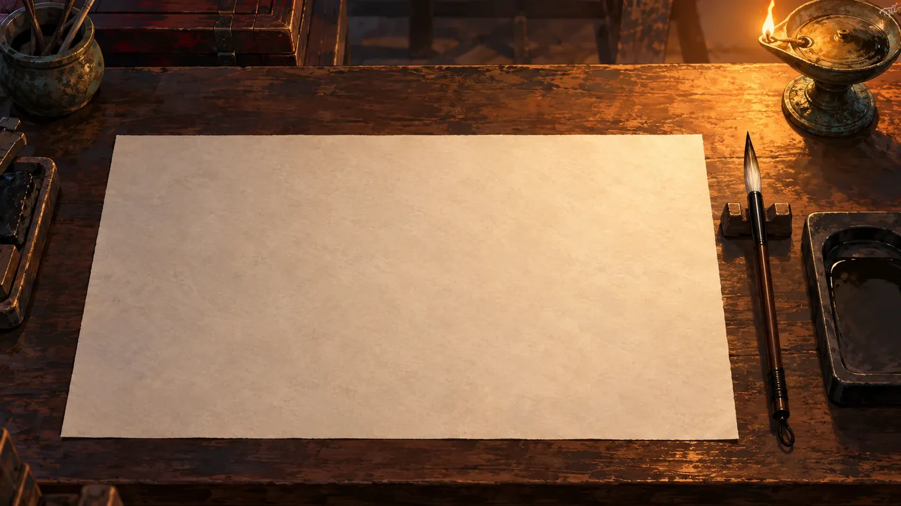
AI 生成的場景圖，案上的紙是空白的；筆擱在筆架上，右邊有硯台。
底圖由生圖產線做出來，紙面留白，模型畫的假字墨痕要避開或清掉。每張圖用哪一版底圖，記在 composite_text.py 的 BASE 表裡。overlay_text.py 的註解提醒：已定稿的圖不要再用早期那支程式跑，它會讀已經疊好字的圖，疊兩次。
第二步：正面排好字的紙
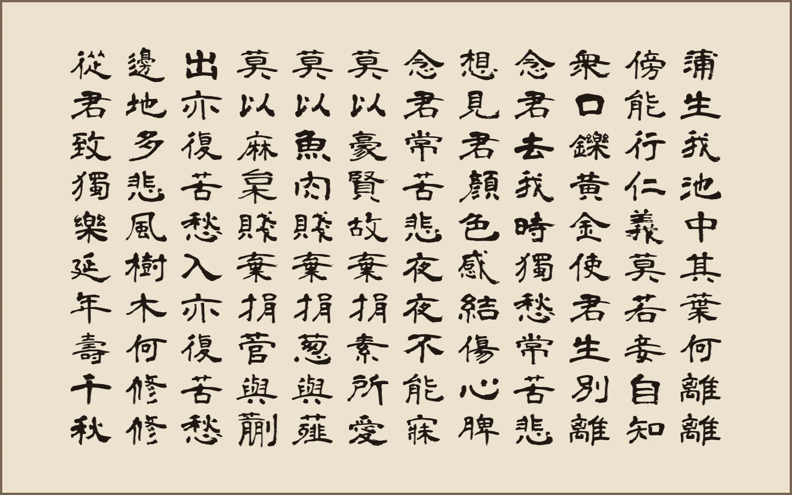
正面的平紙，從寫字人看字是正的。十二聯一聯一行，由右往左排，一行十個字。
flat_sheet.py 在正面的平紙上排字。紙的四個角（原圖座標，照寫字人看的方向）決定平紙的比例；一句一行直行，由右往左；有筆尖的圖，用反透視把筆尖換到平紙上，最後一行的頂端對到筆尖。〈塘上行〉這張寫完了，筆擱在筆架上，所以十二聯排滿。
第三步：透視貼回，成品
劇本卷五〈有怨言〉用的 CG。
composite_text.py 把排好、作者確認過的正面紙，照四角透視貼回 CG。只在看得到紙的像素上墨（米黃、低彩度；手、筆、袖子、頭髮自動避開），墨色乘進紙色，跟著吃到燈光與陰影。字不會蓋到手或袖子上。
字從哪裡來：隸書用青柳字型，缺字拼偏旁
〈塘上行〉用青柳隷書しも排。字型缺字的處理見 4.5：「眾」「黃」「蔥」換成異體，「枲」「蒯」兩個字用青柳自己的偏旁拼。章草的字則是第七節取好的單字，照同一套三步流程排進紙裡（〈燕歌行〉的三步圖在 3.6）。
缺字「枲」「蒯」：枲＝台＋木，蒯＝草字頭＋朋＋立刀旁。
九、資料來源與授權總表
9.1 本頁每一張圖與字型的授權依據
| 圖或字型 | 來源與授權 | 依據 | 放不放，為什麼 |
|---|
| 吳簡照片（6.1） | Commons 上 Gary Todd 的照片，CC0 | [36] | 放圖：CC0，可自由使用 |
| 李柏文書（6.2） | Commons，Public domain（PD-art） | [39] | 放圖：原件是四世紀文書，平面翻拍沒有新的著作權；來源是新聞網頁轉載，請作者確認 |
| 松江本取字示範、取字卡的來源裁切、55 個單字磚（第七節） | 皇象《急就章》松江本掃描，Commons，PD-Art 與 PD-old-70 | [41] | 放圖：公有領域掃描的裁切與衍生的單字 |
| 月儀帖、出師頌、趙孟頫的裁切與單字（第七節） | 故宮 Open Data 與日本國立國會圖書館掃描，Commons，Public domain 與 PD-scan、PD-Japan | [42][21][2] | 放圖：公有領域 |
| 青柳隷書しも樣張與缺字拼法（4.5、6.7） | 用字型排出的圖，不是字型檔 | [22] | 放圖：字型使用沒有任何條件，商用可；本站沒有散布字型檔 |
| 各項目的 CG、三步圖、〈燕歌行〉樣張 | 本作自製：AI 生成的場景圖加程式疊字，字源是上面的公有領域拓本與青柳字型 | 本站頁尾：內容授權 CC BY-NC 4.0 | 放圖：本作自己的內容 |
| 教育部隸書、王漢宗中隸書繁、臨海隸書、阿里媽媽刀隸體的樣張與五套字型比較圖 | 官方授權原文沒有查到（見 6.8） | — | 不放圖：授權不清楚，只列名稱、來源與授權說法 |
9.2 資料來源
- 維基百科〈平复帖〉 百科
https://zh.wikipedia.org/wiki/平复帖
- Commons：File:NPM-故書000157 元趙孟頫書急就章 冊.pdf（Public domain，故宮 Open Data） 圖片授權依據
https://commons.wikimedia.org/wiki/File:NPM-故書000157_元趙孟頫書急就章_冊.pdf
- 維基百科〈蘭亭集序〉 百科
https://zh.wikipedia.org/wiki/蘭亭集序
- 維基百科〈急就篇〉 百科
https://zh.wikipedia.org/wiki/急就篇
- 維基百科〈淳化閣帖〉 百科
https://zh.wikipedia.org/wiki/淳化閣帖
- 維基百科〈摹本〉（臨摹與拓印的說明） 百科
https://zh.wikipedia.org/wiki/摹本
- 本站〈設定集〉（〈真跡〉解讀、〈字是怎麼來的〉） 本站頁面
settings.html
- 衛恆《四體書勢》 古籍，維基文庫
https://zh.wikisource.org/wiki/四體書勢
- 《後漢書》卷六十下〈蔡邕列傳〉 古籍，維基文庫
https://zh.wikisource.org/wiki/後漢書/卷60下
- 維基百科〈熹平石经〉 百科
https://zh.wikipedia.org/wiki/熹平石经
- 黃伯思《東觀餘論》卷上〈法帖刊誤〉（四庫全書本） 古籍，維基文庫
https://zh.wikisource.org/wiki/東觀餘論_(四庫全書本)/卷上
- 本站〈史料考證〉第四節〈書寫與字體〉 本站頁面
index.html
- 維基百科〈走马楼简牍〉 百科
https://zh.wikipedia.org/wiki/走马楼简牍
- 張懷瓘《書斷》卷上（四庫全書本） 古籍，維基文庫
https://zh.wikisource.org/wiki/書斷_(四庫全書本)/卷上
- 維基百科〈隶书〉 百科
https://zh.wikipedia.org/wiki/隶书
- 郎瑛《七修類稿》卷二十一 古籍，維基文庫
https://zh.wikisource.org/wiki/七修類稿/卷21
- 維基百科〈月仪帖〉 百科
https://zh.wikipedia.org/wiki/月仪帖
- 本作正典 zhenji/canon.md「真跡」一節 本作內部文件，不公開
（內部文件，不公開）
- 荒川正晴〈西域長史文書としての「李柏文書」〉，《大谷光瑞とスヴェン・ヘディン》2014，頁 212–234（大阪大學學術情報庫） 學術論文
https://hdl.handle.net/11094/79132
- 上海博物館藏品頁：三國 皇象〈章草急就章冊〉 博物館
https://www.shanghaimuseum.net/mu/frontend/pg/m/article/id/CI00005325
- Commons：File:NDL1113227 晋人章草帖 - 出師頌・月儀章.pdf（PD-scan、PD-Japan，日本國立國會圖書館） 圖片授權依據
https://commons.wikimedia.org/wiki/File:NDL1113227_晋人章草帖_-_出師頌・月儀章.pdf
- 「青柳隸書しも」隨附的〈フォントの使用方法〉（本機 zhenji/fonts/aoyagi/，作者 SIMO） 字型授權原文；連結是 Impress Watch 的軟體介紹頁
https://forest.watch.impress.co.jp/library/software/aoyagireisho/
- 本作 zhenji/時間表.md（袁尚的時間表，204～221） 本作內部文件，不公開
（內部文件，不公開）
- 《昭明文選》卷二十七〈燕歌行〉（李善註） 古籍，維基文庫
https://zh.wikisource.org/wiki/昭明文選/卷27
- 徐陵《玉臺新詠》卷九（四庫全書本） 古籍，維基文庫
https://zh.wikisource.org/wiki/玉臺新詠_(四庫全書本)/卷09
- 沈約《宋書》卷二十一〈樂志三〉，晉樂所奏〈秋風〉〈燕歌行〉 古籍，維基文庫
https://zh.wikisource.org/wiki/宋書/卷21
- 郭茂倩《樂府詩集》卷三十二（四庫全書本） 古籍，維基文庫
https://zh.wikisource.org/wiki/樂府詩集_(四庫全書本)/卷032
- 維基文庫〈燕歌行 (曹丕)〉（含胡應麟評語與七言詩史的按語） 維基文庫，正文取自《魏文帝集》《玉臺新詠》
https://zh.wikisource.org/wiki/燕歌行_(曹丕)
- 維基百科〈曹丕〉 百科
https://zh.wikipedia.org/wiki/曹丕
- 維基百科〈七言古詩〉 百科
https://zh.wikipedia.org/wiki/七言古詩
- 郭茂倩《樂府詩集》卷三十五（四庫全書本）〈塘上行〉 古籍，維基文庫
https://zh.wikisource.org/wiki/樂府詩集_(四庫全書本)/卷035
- 《昭明文選》卷二十八，陸機〈塘上行〉李善註引《歌錄》 古籍，維基文庫
https://zh.wikisource.org/wiki/昭明文選/卷28
- 徐陵《玉臺新詠》卷二（四庫全書本）〈塘上行〉 古籍，維基文庫
https://zh.wikisource.org/wiki/玉臺新詠_(四庫全書本)/卷02
- 維基文庫〈塘上行 (甄皇后)〉（取自《玉臺新詠》，校對度 75%） 維基文庫
https://zh.wikisource.org/wiki/塘上行_(甄皇后)
- 《昭明文選》卷十九〈洛神賦〉（李善註） 古籍，維基文庫
https://zh.wikisource.org/wiki/昭明文選/卷19
- Commons：File:Wu Kingdom Wood Tablets (10111607154).jpg（Gary Todd，CC0） 圖片授權依據
https://commons.wikimedia.org/wiki/File:Wu_Kingdom_Wood_Tablets_(10111607154).jpg
- Wikipedia, Zoumalou bamboo slips 百科
https://en.wikipedia.org/wiki/Zoumalou_bamboo_slips
- 張永強〈走馬樓吳簡在書法史上的位置〉，《美術報》2019 年 11 月 6 日（人民政協網轉載） 報刊文章
http://www.rmzxw.com.cn/c/2019-11-06/2459516.shtml
- Commons：File:李柏文書（前凉）.jpg（Public domain，PD-art） 圖片授權依據
https://commons.wikimedia.org/wiki/File:李柏文書（前凉）.jpg
- 維基百科〈李柏文書〉 百科
https://zh.wikipedia.org/wiki/李柏文書
- Commons：File:皇象急就章.pdf（PD-Art、PD-old-70） 圖片授權依據
https://commons.wikimedia.org/wiki/File:皇象急就章.pdf
- Commons：File:NPM-贈帖000021 鬱岡齋墨妙帖 七 冊.pdf（Public domain，故宮 Open Data） 圖片授權依據
https://commons.wikimedia.org/wiki/File:NPM-贈帖000021_鬱岡齋墨妙帖_七_冊.pdf
- 教育部語文成果網〈國字標準字體字形檔〉說明 PDF（楷書、宋體；連到 CC BY-ND 3.0 台灣版） 官方文件，只涵蓋楷書與宋體
https://language.moe.gov.tw/files/%E5%9C%8B%E5%AD%97%E6%A8%99%E6%BA%96%E5%AD%97%E9%AB%94%E5%AD%97%E5%BD%A2%E6%AA%94.pdf
- 電腦王阿達〈教育部「楷書、宋體、隸書」免費標準字體字型開放下載〉 第三方報導，不是官方
https://www.kocpc.com.tw/archives/398494
- Google Code Archive：wangfonts（王漢宗自由字型） 專案頁，授權全文頁面讀不到
https://code.google.com/archive/p/wangfonts/
- 猫啃网〈临海隶书〉字體介紹 第三方字體網站，不是官方
https://www.maoken.com/freefonts/20208.html
本頁由 zhenji/calligraphy_page.py 產生：劇本句子與句序從本機專案逐句掃，55 字統計從取字檔 manifest.json 統計，詩的逐字比對從 zhenji/calligraphy_refs.json（維基文庫各版本，記了修訂版號）比對。來源在私有的 larch-taoyuan，改了來源檔再跑 publish_site.py 重新產生。